All in One View
Content from Introduction
Last updated on 2026-07-28 | Edit this page
Overview
Questions
- What exactly is job efficiency in the computing world?
- Why would I care about job efficiency and what are potential pitfalls?
- How can I begin measuring the runtime performance of my programs?
Objectives
After completing this episode, participants should be able to:
- Use
timeanddateto measure program runtime. - Identify how implementation choices affect runtime, resource usage, and numerical results.
- Explain how inefficient jobs affect resource consumption and energy usage.
Background
According to Oxford’s English Dictionaries, efficiency is “the ratio of the useful work performed by a machine […] to the total energy expended or heat taken in”.
In a High-Performance Computing (HPC) context, the useful work corresponds to the scientific computations performed by an application. Efficient execution therefore means making effective use of allocated computational resources such as CPU cores, memory, GPUs, storage systems, and interconnect bandwidth, while also minimizing runtime and energy consumption. Or, phrased more bluntly, we want to avoid running large HPC systems for nothing but hot air.
At first glance, a single inefficient job may seem to have little impact on overall power consumption of an HPC system, since such systems operate continuously anyway. A similar argument could be made about air travel: the airplane will take off regardless of whether one additional passenger boards the flight. However, individual behavior still contributes to overall efficiency. In air travel, passengers can improve fuel efficiency by traveling lightly and avoiding unnecessary baggage, thereby improving the airplane’s ratio \(\frac{useful\;work}{total\;energy\;expended}\).
In HPC systems, users similarly influence overall system efficiency through the way they configure, execute, and optimize their workloads. Throughout this lesson, we will examine common inefficiencies in computational jobs while continuing to use the air-travel analogy to build intuition about resource utilization and performance optimization.
Before we can improve the efficiency of a computational workload, we
first need a way to measure it. One of the simplest and most informative
performance metrics is the runtime of a program. The time
command provides a convenient way to obtain this measurement.
Measuring sleep with time
Let’s look at the sleep command.
This command pauses execution for a specified duration, here 2
seconds, before continuing with the next command. You can verify the
pause duration using a stopwatch, here provided by the time
command:
which will produce output similar to
OUTPUT
real 0m2.002s
user 0m0.001s
sys 0m0.000sThe time command is often one of the first
performance-analysis tools introduced in HPC. This command provides a
breakdown of elapsed wall-clock time and CPU execution time consumed by
your program. The time command reports three timing
measurements: real, user, and sys.
| Time | Meaning |
| real | Wall-clock time = total runtime as seen on a stopwatch |
| user | Time spent in user mode: application computations such as arithmetic operations, loops, and program logic |
| sys | Time spent in the operating system’s kernel mode (system calls): I/O = reading/writing files, memory management, and device communication |
The sleep command performs almost no computations or I/O
operations. As a result, the reported user and sys
times remain close to zero.
You may notice that the output of time on your system
looks different from the examples shown in this lesson. This is because
time exists both as a shell keyword
provided by your shell (such as Bash or zsh) and as a standalone
executable, usually located at /usr/bin/time. When you run
time <command>, the shell normally executes its own
time keyword rather than the GNU executable. You can verify
this with
Notice that which only locates executables available
through the user’s $PATH, whereas type also
reports shell keywords and built-in commands. This makes
type the more useful command for determining what will
actually be executed.
If you specifically want to use the GNU implementation, invoke it by specifying its full path:
BASH
$ /usr/bin/time sleep 2
0.00user 0.00system 0:02.00elapsed 0%CPU (0avgtext+0avgdata 2176maxresident)k
0inputs+0outputs (0major+90minor)pagefaults 0swapsThe GNU implementation can also produce a more detailed report using
the -v (“verbose”) option:
BASH
$ /usr/bin/time -v sleep 2
Command being timed: "sleep 2"
User time (seconds): 0.00
System time (seconds): 0.00
Percent of CPU this job got: 0%
Elapsed (wall clock) time (h:mm:ss or m:ss): 0:02.00
Average shared text size (kbytes): 0
Average unshared data size (kbytes): 0
Average stack size (kbytes): 0
Average total size (kbytes): 0
Maximum resident set size (kbytes): 1920
Average resident set size (kbytes): 0
Major (requiring I/O) page faults: 0
Minor (reclaiming a frame) page faults: 105
Voluntary context switches: 10
Involuntary context switches: 1
Swaps: 0
File system inputs: 0
File system outputs: 0
Socket messages sent: 0
Socket messages received: 0
Signals delivered: 0
Page size (bytes): 4096
Exit status: 0For comparison, the Bash shell keyword produces a much shorter summary:
Different shells may format their output differently. For example,
the time keyword in zsh reports:
Although the formatting differs, all of these implementations report
broadly the same runtime information. The main differences are the
output format and, in the case of GNU /usr/bin/time, the
amount of detail that is available.
For HPC users this distinction is occasionally important. Different
HPC systems may use different login shells, shell versions, or software
environments. As a result, the format of the output produced by
time may differ between clusters even when the measured
quantities are the same. This is particularly relevant when benchmarking
or profiling workflows automatically parse the output of
time, since different implementations may produce different
field names or output formats.
Benchmarking and profiling
Runtime measurements are often collected automatically during performance studies.
- Benchmarking measures how application performance changes under different execution conditions, such as varying the number of CPU cores, nodes, threads, problem sizes, or hardware configurations.
- Profiling collects detailed information about how a program uses computational resources during execution. Typical profiling metrics include execution time, memory usage, communication overhead, I/O activity, and other performance-related measurements.
Because such workflows often process timing data automatically,
differences in the output format produced by time may
require special handling.
Benchmarking and profiling are commonly used to identify performance bottlenecks and evaluate optimization strategies for HPC applications.
Shell keywords and executables are documented differently. Shell
keywords provide built-in help through help, for
example
whereas executables typically provide manual pages:
Knowing which implementation you are using can help explain differences in reported runtime statistics across systems.
Different HPC systems may provide different default login shells or environment configurations. You can inspect available shells using:
OUTPUT
/bin/sh
/bin/bash
/usr/bin/sh
/usr/bin/bash
/usr/bin/tmux
/bin/tmux
/bin/csh
/bin/tcsh
/usr/bin/csh
/usr/bin/tcsh
/bin/ksh
/bin/rksh
/usr/bin/ksh
/usr/bin/rkshTo determine your currently active shell, you can use:
OUTPUT
/bin/bashTime for a date
The time command measures the runtime of an entire
command. Sometimes, however, we want to measure only part of a workflow
or record timestamps inside a shell script. In these situations, the
date command provides a simple way to obtain precise
timestamps.
As described in its manual page (man date), the
date command prints or sets the system date and time. It
can also be used as a lightweight source of high-resolution
timestamps:
OUTPUT
1785152285.376560875The exact output will vary each time the command is run.
The timestamp is expressed as the number of seconds elapsed since a fixed reference point.
Unlike time, which measures an entire command, recording
timestamps with date allows us to measure selected parts of
workflows or multiple commands within shell scripts.
To calculate elapsed time, timestamps must share a common reference point. Such a reference point is commonly called the epoch.
According to the date manual page, the default reference
point used by date is
1970-01-01T00:00:00+00:00, commonly known as the
Unix epoch.
OUTPUT
1970-01-01T00:00:00+00:00The format specifier %s prints the number of elapsed
seconds since the Unix epoch, while %N appends the
fractional nanosecond component.
Running the command repeatedly therefore produces large
floating-point numbers representing successive timestamps. Although
%N prints nanoseconds, the actual timer precision depends
on the operating system, kernel, and underlying hardware.
Building a stopwatch with
date
Once we can record timestamps, we can build our own stopwatch.
Store the current timestamp before and after running a command:
This creates a simple stopwatch. The elapsed runtime is obtained by
subtracting the start timestamp from the end timestamp. Try this using
the sleep command between the two timestamps.
Part 1: An inefficient job example
After warming up with some basic timing methods, let’s analyze the
efficiency of a small script that performs a slightly more demanding
workload than the sleep command. Have a look at the
following short Bash script.
BASH
#!/usr/bin/env bash
sum=0
for i in $(seq 1 1000)
do
val=$(echo "e(2 * l(${i}))" | bc -l)
sum=$(echo "$sum + $val" | bc -l)
done
echo Sum=$sumCopy this into a file called sum.bash, or download it
directly:
BASH
curl -L -o sum.bash https://raw.githubusercontent.com/carpentries-incubator/hpc-job-efficiency/main/learners/data/sum.bashThen make it executable:
The main part of this shell script is a for loop that
computes the sum of all squares \(i^2\)
over 1000 iterations; note that seq 1 1000 generates the
sequence \(i = 1, 2, 3, \ldots, 1000\).
Inside the for loop, the bc calculator tool is
used to evaluate the mathematical expressions. The first statement
inside the loop (val=...) evaluates the expression
e(2 * l(${i})), which corresponds to the mathematical
identity \(i^2 = e^{2 \cdot \ln(i)}\).
For example, \(e^{2 \cdot \ln(3)} =
3^2\), where \(\ln\) denotes the
natural logarithm. The second statement inside the loop
(sum=...) accumulates the computed values \(i^2\) into the variable sum,
so the final echo statement prints the total sum \(\sum_{i=1}^{1000}i^2\).
Identify the inefficient pieces
In the above Bash script, the for loop invokes the
bc calculator twice during every loop iteration. Compared
to more efficient approaches shown later, this method is relatively
slow. Why might that be the case?
Each statement of the form echo ... | bc -l launches a
new bc process through a pipe and subshell.
The construct echo ... | bc -l launches a new
bc process for every invocation. In this script, each loop
iteration creates two separate bc processes.
Process creation, shell expansion, pipe setup, and inter-process
communication all introduce overhead. Since the mathematical computation
itself is very small, most of the total runtime of sum.bash
is spent managing repeatedly spawned processes rather than performing
useful calculations.
The overhead in this shell script is dominated by repeatedly
launching external bc processes. Each invocation requires
process creation, shell expansion, pipe setup, and inter-process
communication, while the actual mathematical work performed by
bc is comparatively small.
Going back to our air-travel analogy, the summation of 1000 numbers is equivalent to boarding 1000 passengers onto a large airplane. If minimizing total boarding time matters, an inefficient boarding procedure would involve every passenger bringing multiple oversized carry-on bags. Many travelers have experienced how loading excessive baggage into overhead compartments slows movement throughout the aircraft cabin.
Similarly, the repeated creation of 2000 bc subprocesses
(two during each loop iteration) introduces substantial
process-management overhead that slows the overall execution of the
script far more than the mathematical calculations themselves.
Let’s pull out our stopwatches
We can use either the time command or
date-based timestamps. Can you measure the runtime of
sum.bash?
You can prepend almost any command with time. If you
want to use date, remember that
now=$(date +%s.%N) stores the current timestamp in a
variable, while && allows multiple commands to be
chained together.
A straightforward approach is
Alternatively, date and && can be
combined into a wrapper command that measures the runtime of
sum.bash externally:
Another option is to place the timestamp measurements directly inside
the sum.bash script, or download it directly:
Speeding things up
A remedy for the inefficiencies inside the for loop of
sum.bash is to avoid repeatedly spawning external
bc processes. Ideally, we would like to perform all
computations within a single bc invocation instead of
launching thousands of separate subprocesses.
Let us now revisit the airplane analogy: we want passengers to consolidate their carry-on baggage into a single large container that can be loaded onto the airplane in one coordinated operation, rather than having every passenger individually block the aisle while handling multiple bags.
This reduction in process-management overhead can be achieved by
replacing the external shell loop with a loop executed internally by
bc:
In this approach, which we will call the one-liner, the
loop, arithmetic, and accumulation are executed inside a single
bc process. This avoids the repeated process creation and
communication overhead present in the original implementation.
This example illustrates a common performance-engineering principle in HPC: substantial speedups can often be achieved by replacing inefficient implementations with numerically optimized software libraries or by reducing runtime-management overhead.
Evaluate the runtime improvement
Compare the runtimes of the summation script sum.bash
and the one-liner.
The Bash keyword time is sufficient to observe the
runtime difference.
While the exact numbers depend on the underlying hardware and
software environment, you will typically observe that the one-liner
executes dramatically faster than sum.bash.
Of course, one could tolerate such inefficiency if the script is only executed occasionally and its runtime is only a few seconds. However, consider a large-scale computational job running on a supercomputer where compute time is limited, shared, or billed per usage hour.
In such environments, even seemingly small inefficiencies can become expensive. A slowdown by only a factor of two may double both the runtime and associated resource consumption, increasing cost, queue occupancy, and energy usage.
The runtime comparisons above primarily measure computational performance. When the execution speed of a program is mainly limited by the processor’s ability to perform computations, the workload is called CPU-bound or compute-bound.
In contrast, a memory-bound workload is limited primarily by memory-access performance rather than computational throughput. This occurs when the CPU spends a significant fraction of time waiting for data to be fetched from main memory, cache, or other memory hierarchies instead of performing computations.
Optimizing memory-bound applications therefore focuses on improving data locality, memory-access patterns, cache utilization, and data movement efficiency rather than increasing raw computational performance.
Finally, if performance is dominated by reading or writing data to storage devices or transferring data across a network, the workload becomes I/O-bound. In such cases, storage throughput, latency, or network bandwidth become the primary performance bottlenecks.
So far we have focused on efficiency from the perspective of runtime. In HPC environments, however, efficiency also affects resource consumption and energy usage. We now broaden the discussion from individual programs to the computing systems that execute them.
Part 2: About HPC power consumption
Modern HPC systems achieve high performance by distributing computations across many CPU cores, GPUs, and compute nodes that operate in parallel.
To make effective use of these resources, parallel programs divide a workload into smaller tasks that can execute concurrently.
As a result, many HPC efficiency considerations revolve around keeping computational resources utilized effectively while minimizing idle time, synchronization overhead, and unnecessary communication.
We will revisit several of these performance and efficiency aspects in later episodes.
The more the merrier: Parallel resources
Many parallel computing applications use multiple CPU cores, or even multiple CPUs, simultaneously. A CPU core is an independent processing unit capable of executing program instructions. Modern processors typically contain multiple cores. As of 2026, consumer CPUs commonly provide quad-core (4 cores), octa-core (8 cores), and higher core-count configurations. High-end desktop and gaming CPUs often feature 16 or more cores, while HPC compute nodes frequently provide multiple CPUs with dozens of cores each, typically 64 or more cores per node.
Nowadays, most HPC centers are also equipped with GPUs (Graphics Processing Units). GPUs are particularly well suited for workloads that benefit from executing very large numbers of lightweight operations in parallel. The number of GPU cores varies greatly depending on the hardware model, ranging from a few hundred cores in low-end devices to many thousands in modern accelerator hardware.
Measuring parallel runtime: core-hours
Because HPC applications often execute in parallel, resource usage is commonly measured using units that account for both runtime and the number of utilized processing cores.
The unit core-hour (core-h) represents the usage of one CPU core for one hour. Resource consumption therefore scales approximately linearly with the number of allocated cores and the runtime of the application. For example, assume you have a monthly allocation of \(500\) core-h, with additional usage incurring extra cost. In that case, you could run: - a parallel job using \(500\) CPU cores for \(1\) hour, or - a single-core job for \(500\) hours.
Of course, the latter may require some patience before the computation finishes. Some HPC systems additionally account for GPU usage through units such as GPU-hours.
So far, the focus has been on CPU/GPU core counts and runtime as primary HPC resource allocations. However, HPC workloads also depend heavily on other hardware resources:
- Memory: Some applications require very large amounts of memory (RAM), regardless of whether they execute in parallel or serially. For example, certain numerical methods for solving large systems of equations require large shared-memory regions that cannot easily be partitioned across independent processes. HPC centers therefore often provide dedicated large-memory nodes for memory-intensive applications.
- Storage: Other applications process massive amounts of data. Fields such as genomics, climate modeling, and large-scale simulations may involve terabytes or even petabytes of data that must be stored, transferred, and analyzed efficiently.
- GPU-hours: Some HPC centers account for GPU usage separately using GPU-hours (GPU-h). A GPU-hour represents the use of one GPU for one hour, analogous to a CPU core-hour. For example, running a job for one hour on a node with four allocated GPUs consumes 4 GPU-h. GPU-hours are typically accounted for independently of CPU core-hours, although individual HPC centers may combine both resources in their allocation or billing policies.
For example, a job allocated one compute node with 48 CPU cores and 4 allocated GPUs for one hour consumes:
- 1 node-hour,
- 48 core-hours, and
- 4 GPU-hours.
A typical HPC computing job
Like many high-performance systems, HPC infrastructures require substantial electrical power to operate. Large-scale scientific computations therefore also translate into significant energy consumption. Consider a typical parallel scientific-computing workload running on an HPC center. Assume the problem is too large for a single CPU and therefore executes across multiple compute nodes in parallel. Power consumption is measured in watts (W), the SI unit of power, which describes the rate at which electrical energy is consumed. Modern HPC compute nodes equipped with 64-core CPUs may consume roughly: - about 250–300 W while idle, and - about 850–900 W under heavy computational load, depending on factors such as processor generation and cooling technology.
For comparison, a household coffee machine typically consumes between 800 W and 1500 W while operating.
Assume our example HPC job uses the following resources: - 12 compute nodes running in parallel, - 64 CPU cores per node (e.g., Intel® Xeon® 6774P or AMD® EPYC® 9534), - 12 hours of sustained high utilization (realistic for many scientific simulations), - approximate power per node: - idle: \(\sim 300\) W, - full load: \(\sim 900\) W, - additional power draw under load: \(\sim 600\) W.
The additional energy consumption caused by the workload is therefore approximately
\[ 12 \text{ nodes} \times 600 \text{ W} \times 12 \text{ h} = 86{,}400 \text{ Wh} = 86.4 \text{ kWh} \]
How many core-hours does this job involve?
HPC centers often provide different job queues for different classes of workloads. For example, a queue named big-jobs may be reserved for jobs exceeding a certain number of parallel tasks (often implemented as processes) (e.g., 1024). Another queue, such as big-mem, may provide access to nodes with very large memory capacities (e.g., 512 GB, 1 TB, or more RAM per compute node).
Assume the following queues are available, all with identical memory configurations:
-
small-jobs: total task count up to 511. -
medium-jobs: total task count 512–1023. -
big-jobs: total task count 1024 or more.
When submitting the example HPC workload from the previous section: 1. Into which queue would the job be placed? 2. If the allocation cost is 1 cent per core-h, what would be the total cost in euros (€1 = 100 cents)?
For this example, assume one task is assigned to each CPU core. The total number of tasks is therefore approximately: \[ \text{cores per node} \times \text{number of nodes} \]
Total core-hours are then computed as: \[ \text{task count} \times \text{runtime in hours} \]
The total number of tasks is \[
\text{cores per node} \times \text{number of nodes} = 64 \times 12 = 768
\] which places the job into the medium-jobs
queue.
The total number of core-hours is \[ 64 \times 12 \times 12 = 9216 \text{ core-h} \]
At a billing rate of 1 cent per core-h, the total cost becomes \[ 9216 \times 0.01\,€ = 92.16\,€ \]
What are watt-hours?
The unit Wh (watt-hour) measures energy. For example, 86,400 Wh corresponds to the amount of energy consumed by an 86.4 kW machine operating continuously for one hour.
Returning to our coffee analogy, brewing a single cup of coffee typically requires roughly 50–100 Wh of energy, depending on the preparation method and brewing time. Running our 12-node HPC job for 12 hours therefore consumes energy comparable to brewing approximately 864–1728 cups of coffee.
For a more physics-inspired comparison, suppose — unrealistically — that all energy consumed by the compute job could be converted perfectly into mechanical work. Using gravitational potential energy,
\[ \text{Energy} = \text{mass} \times \text{gravitational acceleration} \times \text{height} \]
we could lift an average African elephant (approximately 6000 kg) vertically by roughly
\[ h \approx \frac{86.4 \times 3.6 \times 10^6}{6000 \times 9.81} \approx 5285 \text{ m} \]
which is nearly the elevation of Mount Kilimanjaro (5895 m).
Note that the focus so far has been on additional power consumption caused by computational load beyond a system’s idle state. Attributing this increase only to CPU usage would underestimate the true energy footprint of an HPC workload.
In practice, the additional power draw between idle and full utilization also depends on many other hardware components involved in executing a computational job. Therefore, it is useful to briefly examine which parts of an HPC system become active after submitting a large-scale computational workload.
-
CPUs consume power through two primary mechanisms:
- Dynamic power consumption: caused by transistor switching activity during computations. It depends strongly on clock frequency and operating voltage.
- Static power consumption: caused by leakage currents that persist even when transistors are not actively switching (i.e., even when the CPU is idle). This component depends on transistor count and semiconductor manufacturing characteristics.
Both mechanisms ultimately dissipate electrical energy as heat, which is why CPU cooling is essential.
Memory (DRAM) consumes power primarily because stored electrical charge leaks over time and must therefore be refreshed periodically. These refresh cycles compensate for charge leakage in the memory cells. Periodic refreshing is necessary to maintain data integrity, which is one reason why DRAM consumes power even while idle. Additional power is consumed by memory-controller circuitry and by active read/write operations.
Network interface cards (NICs) consume power while transmitting and receiving data across the network fabric. Power consumption generally increases with network throughput, link speed, physical media, and interconnect technology.
-
Storage systems also contribute significantly to power consumption:
- Hard disk drives (HDDs) require continuous power for spinning disks and moving mechanical components.
- Solid-state drives (SSDs) store data electronically and are typically more power-efficient, especially during idle operation. Under heavy I/O workloads, however, SSD power consumption can still become substantial, although they typically complete data transfers faster than HDDs and return to idle operation sooner.
-
Cooling systems are among the largest contributors to total datacenter energy use:
- Idle: During low utilization, cooling may account for roughly 10–20% of total system power.
- Maximum load: Under sustained heavy computational load, cooling infrastructure can consume a substantially larger fraction of overall datacenter power consumption, sometimes approaching 50–70% depending on cooling technology and datacenter design.
Cooling is essential because all electrical components generate heat during operation. Under heavy workloads, insufficient cooling may cause CPUs and GPUs to exceed safe operating temperatures, potentially reducing performance through thermal throttling or damaging hardware.
These considerations highlight why identifying efficiency bottlenecks before submitting large HPC workloads is essential. Efficient job design reduces unnecessary energy consumption, improves overall system utilization, and allows HPC systems to execute workloads more efficiently and sustainably.
Returning to the airplane analogy, if passengers minimize unnecessary baggage, the total aircraft load decreases. This either allows more passengers to travel simultaneously or reduces the fuel required for the journey. Similarly, efficient HPC workloads reduce unnecessary resource consumption and allow HPC systems to execute computational workloads more efficiently.
- Runtime can be measured using tools such as
timeanddate. - Repeated process creation can dominate runtime.
- HPC resource usage is commonly measured in core-hours and GPU-hours.
- Computational workloads may be compute-bound, memory-bound, or I/O bound.
- Efficient jobs reduce both resource consumption and energy use.
- Implementation choices can affect both runtime and numerical accuracy.
So what’s next?
The following episodes will put a number of these introductory thoughts into concrete action by looking at efficiency aspects around a computationally demanding graphical program. While it is not directly an action-loaded video game, it does contain essential pieces thereof, because it uses the technique of ray tracing.
Ray tracing is a technique that simulates how light travels in a 3D scene to create realistic images. It simulates the behavior of light in terms of optical effects like reflection, refraction, shadows, absorption, etc. The underlying calculations involve real-world physics, which makes them computationally expensive - an ideal HPC use case.
Submit your first raytracer job with Slurm
Compare the real and user times reported at
the end of the job’s output file (named something like
slurm-<NUMBER>.out).
How do they differ?
Notice that the reported user time is substantially larger than the elapsed real time.
OUTPUT
Image rendered in CPU
==============================================
Computational Performance Metrics
==============================================
Image Size: 800 x 800
Number of Snowmen: 3
MPI Processes: 4
Threads per Process: 1
----------------------------------------------
Performance (rays/sec): 2.699e+06
----------------------------------------------
Max Local Computation Time (s): 30.357
Min Local Computation Time (s): 30.106
Avg Local Computation Time (s): 30.172
==============================================
real 0m38.484s
user 2m1.221s
sys 0m3.969sWhat is the ratio between the reported user and
real times?
Which command-line argument in mpirun -np 4 might
explain this ratio?
Content from Resource Requirements
Last updated on 2026-07-28 | Edit this page
Overview
Questions
- How many resources should I request initially?
- What scheduler options exist to request resources?
- How do I know if they are used well?
- How large is my HPC cluster?
Objectives
After completing this episode, participants should be able to …
- Identify the size of their jobs in relation to the HPC system.
- Request a good amount of resources from the scheduler.
- Change the parameters to see how the execution time changes.
When you run a program on your local workstation or laptop, you typically don’t plan out the usage of computing resources like memory or core-hours. Your applications simply take as much as they need and if your computer runs out of resources, you can just a few. However, unless you are very rich, you probably don’t have a dedicated HPC cluster just to yourself and instead you have to share one with your colleagues. In such a scenario greedily consuming as many resources as possible is very impolite, so we need to restrain ourselves and carefully allocate just as many resources as needed. These resource constraints are then enforced by the cluster’s scheduling system so that you cannot accidentally use more resources than you think.
Getting a feel for the size of your cluster
To start with your resource planning, it is always a good idea to first get a feeling for the size of the cluster available to you. For example, if your cluster has tens of thousands of CPU cores and you use only 10 of them, you are far away from what would be considered excessive usage of resources. However, if your calculation utilizes GPUs and your cluster has only a handful of them, you should really make sure to use only the minimum amount necessary to get your work done.
Let’s start by getting an overview of the partitions of your cluster:
Here is a (simplified) example output for the command above:
PARTITION NODES CPUS MEMORY GRES TIMELIMIT
normal 223 36 95000+ (null) 1-00:00:00
long 90 36 192000 (null) 7-00:00:00
express 6 36 95000+ (null) 2:00:00
zen4 46 192 763758+ (null) 2-00:00:00
gpuexpress 1 32 240000 gpu:rtx2080:7 12:00:00
gpu4090 8 32 360448 gpu:rtx4090:6 7-00:00:00
gpuh200 4 128 1547843 gpu:h200:8 7-00:00:00In the output, we see the name of each partition, the number of nodes in this partition, the number of CPU cores per node, the amount of memory per node (in Megabytes (or Mebibytes?)), the number of generic resources (typically GPUs) per node and finally the maximum amount of time any job is allowed to take.
Compare the resources available in the different partitions of your local cluster. Can you draw conclusions on what the purpose of each partition is based on the resources it contains?
For our example output above we can make some educated guesses on what the partitions are supposed to be used for:
- The
normalpartition has a (relatively) small amount of memory and limits jobs to at most one day, but has by far the most nodes. This partition is probably designed for small- to medium-sized jobs. Since there are noGRESin this partition, only CPU computations can be performed here. Also, as the number of cores per node is (relatively) small, this partition only allowd multithreading up to 36 threads and requires MPI for a higher degree of parallelism. - The
longpartition has double the memory compared to thenormalpartition, but less than half the number of nodes. It also allows for much longer running jobs. This partition is likely intended for jobs that are too big for thenormalpartition. -
expressis a very small partition with a similar configuration tonormal, but a very short time limit of only 2 hours. The purpose of this partition is likely testing and very short running jobs like software compilation. - Unlike the former partitions,
zen4has a lot more cores and memory per node. The intent of this partition is probably to run jobs using large-scale multithreading. The name of the partitions implies a certain CPU generation (AMD Zen 4), which appears to be newer than the CPU model used in thenormal,longandexpresspartitions (typically core counts increase in newer CPU generations). -
gpuexpressis the first partition that features GPU resources. However, with only a single node and a maximum job duration of 12 hours, this partition seems to be intended again for testing purposes rather than large-scale computations. This also matches the relatively old GPU model. - In contrast,
gpu4090has more nodes and a much longer walltime of seven days and is thus suitable for actual HPC workloads. Given the low number of CPU cores, this partition is intended for GPU workloads only. More details can be gleamed from the GPU model used in this partition (RTX 4090). This GPU type is typically used for Workloads using single-precision floating point calculations. - Finally, the
gpuh200partition combines a large number of very powerful H200 GPUs with a high core count and a very large amount of memory. This partition seems to be intended for the heaviest workloads that can make use of both CPU and GPU resources. The drawback is the low number of nodes in this partition.
To get a point of reference, you can also compare the total number of cores in the entire cluster to the number of CPU cores on the login node or on your local machine.
BASH
lscpu | grep "CPU(s):"
# If lscpu is not available on your machine, you can also use this command
cat /proc/cpuinfo | grep "core id" | wc -lAs you can see, your cluster likely has multiple orders of magnitude more cores in total than the login node or your local machine. To see the amount of memory on the machine you are logged into you can use
Again, the total memory of the cluster is going to be much, much larger than the memory of any individual machine.
All of these cores and all of that memory are shared between you and all the other users of your cluster. To get a feeling for the amount of resources per user, let’s try to get an estimate for how many users there are by counting the number of home directories.
On some clusters, home directories are not placed directly in
/home, but are split up into subdirectories first (e.g., by
first letter of the username like /home/s/someuser). In
this case, you have to use -maxdepth 2 -mindepth 2 to count
the contents of these subdirectories. If your cluster does not use
/home for the users’ home directories, you might have to
use a different path (check dirname "$HOME" for a clue).
Also, this command only gives an upper limit to the number of real
cluster users as there might be home directories for service users as
well.
By dividing the total number of cores / the total memory by the amount of users, you get an estimate of how many resources each user has available in a perfectly fair world.
Does this mean you can never use more than this amount of resources?
Now that you have an idea of how big your cluster is, you can start to make informed decisions on how many resources are reasonable to ask for.
Challenge
sinfo can show a lot more information on the nodes and
partitions of your cluster. Check out the documentation
and experiment with additional output options. Try to find a single
command that will shows for each command the number of allocated and
idle nodes and CPU cores.
BASH
$ sinfo -O Partition,CPUsState,NodeAIOT
PARTITION CPUS(A/I/O/T) NODES(A/I/O/T)
normal* 6336/720/972/8028 196/0/27/223
long 2205/351/684/3240 71/0/19/90
express 44/172/0/216 3/3/0/6
zen4 7532/1108/192/8832 44/1/1/46
gpuexpress 0/32/0/32 0/1/0/1
gpu4090 177/35/44/256 7/0/1/8
gpuh200 90/166/256/512 2/0/2/4Sizing your jobs
The resources required by your jobs primarily depend on the application you want to run and are thus very specific to your particular HPC use case. While it is tempting to just wildly overestimate the resource requirements of your application to make sure it cannot possibly run out, this is not a good strategy. Not only would you have to face the wrath of your cluster administrators (and the other users!) for being inefficient, but you would also be punished by the scheduler itself: In most cluster configurations, your scheduling priority decreases faster if you request more resources and larger jobs often need to wait longer until a suitable slot becomes free. Thus, if you want to get your calculations done faster, you should request just enough resources for your application to work.
Finding this amount of resources is often a matter of trial and error
as many applications do not have precisely predictable resource
requirements. Let’s try this for our snowman renderer. Put the following
in a file named snowman.job:
BASH
#!/bin/bash
#SBATCH --nodes=1
#SBATCH --partition=<put your partition here>
#SBATCH --ntasks=4
#SBATCH --cpus-per-task=1
#SBATCH --mem=1G
#SBATCH --time=00:01:00
#SBATCH --output=snowman-stdout.log
#SBATCH --job-name=snowman
# Always a good idea to purge modules first to start with a clean module environment
module purge
# <put the module load commands for your cluster here>
# Start the raytracer
mpirun -n 4 ./SnowmanRaytracer/build/raytracer -width=1024 -height=1024 -spp=256 -threads=1 -alloc_mode=3 -png=snowman.pngThe #SBATCH directives assign our job the following
resources (line-by-line):
- 1 node…
- … from the partition
<put your partition here> - 4 MPI tasks…
- … each of which uses one CPU core (so 4 cores in total)
- 1 GB of memory
- A timelimit of 1 minute
The last two #SBATCH directives specifiy that we want
the output of our job to be captures in the file
snowman-stdout.log and that the job should appear under the
name snowman.
The --mem directive is somewhat unfortunately named as
it does not define the total amount of memory of your job, but the total
amount of memory per node. Here, this distinction does not
matter as we only use one node, but you should keep in mind that
changing the number of nodes often implies that you need to adapt the
--mem value as well. Alternatively, you can also use the
--mem-per-cpu directive such that the memory allocation
automatically scales with the number of cores. However, even in this
case you need to verify that your memory consumption actually scales
linearly with the number of cores for your application!
To test if our estimate works, you have to submit the job to the scheduler:
This command will also print the ID of the job, so we can observe what is happening with it. Wait a bit and have a look at how your job is doing:
After a while, you will see that the status of your job is given as
TIMEOUT.
You might wonder what the -X flag does in the the
sacct call above. This option instructs Slurm to not output
information on the “job steps” associated with your job. Since we don’t
care about these right now, we set this flag to make the output more
concise.
Check the file snowman-stdout.log as well. Near the
bottom you will see a line like this:
slurmstepd: error: *** JOB 1234567 ON somenode CANCELLED AT 2025-04-01T13:37:00 DUE TO TIME LIMIT ***Evidently our job was aborted because it did not finish within the time limit of one minute that we set above. Let’s try giving our job a time limit of 10 minutes instead.
This time the job should succeed and show a status of “COMPLETED” in
sacct. We can check the resources actually needed by our
job with the help of seff:
The output of seff contains many useful bits of
information for sizing our job. In particular, let’s look at these
lines:
[...]
CPU Utilized: 00:21:34
CPU Efficiency: 98.93% of 00:21:48 core-walltime
Job Wall-clock time: 00:05:27
Memory Utilized: 367.28 MB
Memory Efficiency: 35.87% of 1.00 GBThe exact numbers here depend a lot on the hardware and software of your local cluster.
The Job Wall-clock time is the time our job took. As we
can see, our job takes much longer than one minute to complete which is
why our first attempt with a time limit of one minute has failed.
The CPU Utilized line shows us how much CPU time our job
has used. This is calculated by determining the busy time for each core
and then summing these times for all cores. In an ideal world, the CPU
cores should be busy for the entire time of our job, so the CPU time
should be equal to the time the job took times the number of CPU cores.
The ratio between the real CPU time and the ideal CPU time is shown in
the CPU Efficiency line.
Finally, Memory utilized line shows the peak memory
consumption that your job had at any point during its runtime, while
Memory Efficiency is the ratio between this peak value and
the requested amount of memory for the allocation. As we will see later,
this value has to be taken with a grain of salt.
Starting from the set of parameters that successfully run our
program, we can now try to reduce the amout of requested resources. As
is good scientific practice, we should only vary one parameter at a time
and observe the result. Let’s start by reducing the time limit. There is
often a bit of jitter in the time needed to run a job since not all
nodes are perfectly identical, so you should add a safety margin of 10
to 20 percent (completely arbitrary choice of
numbers here; does everyone agree on the order of magnitude?)
According to the time reported by seff, seven minutes
should therefore be a good time limit. If your cluster is faster, you
might reduce this even further.
As you can see, your job will still complete successfully.
Next, we can optimize our memory allocation. According to SLURM, we used 367.28 MB of memory in our last run, so let’s set the memory limit to 500 MB.
After submitting the job with the lowered memory allocation
everything seems fine for a while. But then, right at the end of the
computation, our job will crash. Checking the job status with
sacct will reveal that the job status is
OUT_OF_MEMORY meaning that our job exceeded its memory
limit and was terminated by the scheduler.
This behavior seems contradictory at first: SLURM reported previously that our job only used around 367 MB of memory at most, which is well below the 500 MB limit we set. The explanation for this discrepancy lies in the fact that SLURM measures the peak memory consumption of jobs by polling, i.e., by periodically sampling how much memory the job currently uses. Unfortunately, if the program has spikes in memory consumption that are small enough to fit between two samples, SLURM will miss them and report an incorrect peak memory value. Spikes in memory usage are quite common, for example if your application uses short-lived subprocesses. Most annoyingly, many programs allocate a large chunk of memory right at the end of the computation to write out the results. In the case of the snowman raytracer, we encode the raw pixel data into a PNG at the end, which means we temporarily keep both the raw image and the PNG data in memory.

SLURM determines memory consuption by polling, i.e.,
periodically checking on the memory consumption of your job. If you job
has a memory allocation profile with short spikes in memory usage, the
value reported by seff can be incorrect. In particular, if
the job gets cancelled due to memory exhaustion, you should not rely on
the value reported by seff as it is likely significantly
too low.
So how big is the peak memory consumption of our process really? Luckily, the Linux kernel keeps track of this for us, if SLURM is configured to use the so-called “cgroups v2” mechanism to enforce resource limits (which many HPC systems are). Let’s use this system to find out how much memory the raytracer actually needs. First, we set the memory limit back to 1 GB, i.e., to a configuration that is known to work.
Next, add these lines at the end of your job script:
BASH
echo -n "Total amount of memory used (in bytes): "
cat /sys/fs/cgroup/$(cat /proc/self/cgroup | awk -F ':' '{print $3}')/memory.peakLet’s break down what these lines do:
- The first line prints out a nice label for our peak memory output.
We use
-nto omit the usual newline thatechoadds at the end of its output. - The second line outputs the contents of a file (
cat). The path of this file starts with/sys/fs/cgroup, which is a location where the Linux kernel exports all the cgroups v2 information as files. - For the next part of the path we need the so-called “cgroup path” of
our job. To find out this path, we can use the
/proc/self/cgroupfile, which contains this path as the third entry of a colon-separated list. Therefore, we read the contents of this file (cat) and extract the third entry of the colon separated list (awk -F ':' '{print $3}'). Since we do this in$(...), Bash will place the output of these commands (i.e., the cgroup path) at this point. - The final part of the path is the information we actually want from
the cgroup. In out case, we are interested in
memory.peak, which contains the peak memory consumption of the cgroup.
When you submit your job and look at the output once it finishes, you will find a line like this:
[...]
Total amount of memory used (in bytes): 579346432
[...]So even though SLURM reported our job to only use 367.28 MB of memory, we actually used nearly 600 MB! With this measurement we can make an informed decision on how to set the memory limit for our job:
Run your job again with this limit to verify that it completes successfully.
So far we have tuned the time and memory limits of our job. Now let
us have a look at the CPU core limit. This limit works slightly
differently than the ones we looked at so far in the sense that your job
is not getting terminated if you try to use more cores than you have
allocated. Instead, the scheduler exploits the fact that multitasking
operating systems can switch out the process a given CPU core is working
on. If you have more active processes in your job than you have CPU
cores (i.e., CPU oversubscription), the operating system will
simply switch processes in and out while trying to ensure that each
process gets an equal amount of CPU time. This happens very fast, so you
can’t see the switching directly, but tools like htop will
show your processes running at less than 100% CPU utilization. Below you
can see a situation of four processes running on three CPU cores, which
results in each process running only 75% of the time.

CPU oversubscription can even be harmful to performance as all the switching between processes by the operating system can cost a non-trivial amount of CPU time itself.
Let’s try reducing the number of cores we allocate by reducing the number of MPI tasks we request in our job script:
Now we have a mismatch between the number of tasks we request and the
number of tasks we use in mpirun. However, MPI catches our
folly and prevents us from accidentally oversubscribing our CPU cores.
In the output file you see the full explanation
There are not enough slots available in the system to satisfy the 4
slots that were requested by the application:
./SnowmanRaytracer/build/raytracer
Either request fewer procs for your application, or make more slots
available for use.
A "slot" is the PRRTE term for an allocatable unit where we can
launch a process. The number of slots available are defined by the
environment in which PRRTE processes are run:
1. Hostfile, via "slots=N" clauses (N defaults to number of
processor cores if not provided)
2. The --host command line parameter, via a ":N" suffix on the
hostname (N defaults to 1 if not provided)
3. Resource manager (e.g., SLURM, PBS/Torque, LSF, etc.)
4. If none of a hostfile, the --host command line parameter, or an
RM is present, PRRTE defaults to the number of processor cores
In all the above cases, if you want PRRTE to default to the number
of hardware threads instead of the number of processor cores, use the
--use-hwthread-cpus option.
Alternatively, you can use the --map-by :OVERSUBSCRIBE option to ignore the
number of available slots when deciding the number of processes to
launch.If we actually want to see oversubscription in action, we need to switch from MPI to multithreading. First, let us try without oversubscribing the CPU cores:
BASH
#SBATCH --ntasks=1
#SBATCH --cpus-per-task=4
# [...]
./SnowmanRaytracer/build/raytracer -width=1024 -height=1024 -spp=256 -threads=4 -alloc_mode=3 -png=snowman.pngThis works and if we look at the output of seff again we
get a baseline for our multithreaded job
[...]
CPU Utilized: 00:21:32
CPU Efficiency: 99.08% of 00:21:44 core-walltime
Job Wall-clock time: 00:05:26
Memory Utilized: 90.85 MB
Memory Efficiency: 12.11% of 750.00 MBChallenge
Compare our measurements for 4 threads here to the measurements we made for doing the computation with 4 MPI tasks earlier. What metrics are similar and which ones are different? Do you have an explanation for this?
We can see that the CPU utilization time and the walltime are virtually identical to the MPI version of our job, while the memory utilization is much lower. The exact reasons for this will be discussed in the following episodes, but here is the gist of it:
- Our job is strongly compute-bound, i.e., the time our job takes is mostly determined by how fast the CPU can do its calculations. This is why it does not matter much for CPU utilization whether we use MPI or threads as long as both can keep the same number of CPU cores busy.
- MPI typically incurs an overhead in CPU usage and memory due to the need to communicate between the tasks (in comparison, threads can just share a block of memory without communication). In our raytracer, this overhead for CPU usage is negligible (hence the same CPU utilization time metrics), but there is a significant memory overhead.
Now let’s see what happens when we oversubscribe our CPU by doubling the number of threads without increasing the number of allocated cores in our job script:
BASH
./SnowmanRaytracer/build/raytracer -width=1024 -height=1024 -spp=256 -threads=8 -alloc_mode=3 -png=snowman.pngChallenge
If you cluster allows direct access to the compute nodes, try logging into the node your job is running on and watch the CPU utilization live using
(Note: Sometimes htop hides threads to make the process
list easier to read. This option can be changed by pressing F2, using
the arrow keys to navigate to the “Hide userlang process threads”,
toggling with the return key and then applying the change with F10.)
Compare the CPU utilization of the raytracter threads
with different total numbers of threads.
In the top right of htop you can also see a metric
called load average. Simplified, this is the number of
processes / threads that are currently either running or could run if a
CPU core was free. Compare the amount of load you generate with your job
depending on the number of threads.
You can see that the CPU utilization of each raytracer
thread goes down as the number of threads increases. This means, each
process is only active for a fraction of the total compute time as the
operating system switches between threads.
For the load metric, you can see that the load increases linearly with the number of threads regardless if they are actually running or waiting for a CPU core. Load is a fairly common metric to be monitored by cluster administrators, so if you cause excessive load by CPU oversubscription you will probably hear from your local admin.
Despite using twice the amount of threads, we barely see any
difference in the output of seff:
CPU Utilized: 00:21:29
CPU Efficiency: 98.85% of 00:21:44 core-walltime
Job Wall-clock time: 00:05:26
Memory Utilized: 93.32 MB
Memory Efficiency: 12.44% of 750.00 MBThis shows that despite having more threads, the CPU cores are not performing more work. Instead, the operating system periodically rotates the threads running on each allocated core, making sure every thread gets a time slice to make progress.
Let’s see what happens when we increase the thread count to extreme levels:
BASH
./SnowmanRaytracer/build/raytracer -width=1024 -height=1024 -spp=256 -threads=1024 -alloc_mode=3 -png=snowman.pngWith this setting, seff yields
CPU Utilized: 00:26:45
CPU Efficiency: 99.07% of 00:27:00 core-walltime
Job Wall-clock time: 00:06:45
Memory Utilized: 113.29 MB
Memory Efficiency: 15.11% of 750.00 MBAs we can see, our job is actually getting slowed down from all the switching between threads. This means, that for our raytracer application CPU oversubscription is either pointless or actively harmful regarding performance.
If CPU oversubscription is so bad, then why do most operating systems default to this behavior?
In this case we have a CPU bound application, i.e., the work done by the CPU is the limiting factor and thus dividing this work into smaller chunks does not help with performance. However, there are also applications bound by other resources. For these applications it makes sense to assign the CPU core elsewhere while the process is waiting, e.g., on a storage medium. Also, in most systems it is desireable to have more programs running than your computer has CPU cores since often only a few of them are active at the same time.
Multi-node jobs
So far, we have only used a single node for our job. The big advantage of MPI as a parallelism scheme is the fact that not all MPI tasks need to run on the same node. Let’s try this with our Snowman raytracer example:
BASH
#!/bin/bash
#SBATCH --nodes=2
#SBATCH --partition=<put your partition here>
#SBATCH --ntasks=4
#SBATCH --cpus-per-task=1
#SBATCH --mem=700M
#SBATCH --time=00:07:00
#SBATCH --output=snowman-stdout.log
#SBATCH --job-name=snowman
# Always a good idea to purge modules first to start with a clean module environment
module purge
# <put the module load commands for your cluster here>
mpirun -- ./SnowmanRaytracer/build/raytracer -width=1024 -height=1024 -spp=256 -threads=1 -alloc_mode=3 -png=snowman.png
echo -n "Total amount of memory used (in bytes): "
cat /sys/fs/cgroup$(cat /proc/self/cgroup | awk -F ':' '{print $3}')/memory.peakThe important change here compared to the MPI jobs before is the
--nodes=2 directive, which instructs Slurm to distribute
the 4 tasks across exactly two nodes.
You can also leave the decision of how many nodes to use up to Slurm by specifying a minimum and a maximum number of nodes, e.g.,
--nodes=1-3would mean that Slurn can assign your job either one, two or three nodes.
Let’s look at the seff report of our job once again:
[...]
Nodes: 2
Cores per node: 2
CPU Utilized: 00:21:32
CPU Efficiency: 98.78% of 00:21:48 core-walltime
Job Wall-clock time: 00:05:27
Memory Utilized: 280.80 MB
Memory Efficiency: 20.06% of 1.37 GBWe can see that Slurm did indeed split up the job such that each of the two nodes is running two tasks. We can also see that the walltime and CPU time of our job are basically the same as before. Considering the fact that communication between nodes is usually much slower than communication within a node, this result is surprising at first. However, we can find an explanation in the way our raytracer works. Most of the compute time is spent on tracing light rays through the scene for each pixel. Since these light rays are independent from one another, there is no need to communicate between the MPI tasks. Only at the very end, when the final image is assembled from the samples calculated by each task, there is some MPI communication happening. The overall communication overhead is therefore vanishingly small.
How well your program scales as you increase the number of nodes depends strongly on the amount of communication in your program.
We can also look at the memory consumption:
[...]
Total amount of memory used (in bytes): 464834560
[...]As we can see, there was indeed less memory consumed on the node running our submit script compared to before (470 MB vs 580 MB). However, our method of measuring peak memory consumption does not tell us about the memory consumption of the second node and we have to use slightly more sophisticated tooling to find out how much memory we actually use.
In the course material is a directory
mpi-cgroups-memory-report that can help us out here, but we
need to compile it first:
Make sure you have a working MPI C Compiler (check with
which mpicc). It is part of the same modules that you need
to run the example raytracer application.
The memory reporting tool works by hooking itself into the
MPI_Finalize function that needs to be called at the very
end of every MPI program. Then, it does basically the same thing as we
did in the script before and checks the memory.peak value
from cgroups v2. To apply the hook to a program, you need to add the
path to the mpi-mem-report.so file we just created to the
environment variable LD_PRELOAD:
BASH
LD_PRELOAD=$(pwd)/mpi-cgroups-memory-report/mpi-mem-report.so mpirun -- ./SnowmanRaytracer/build/raytracer -width=1024 -height=1024 -spp=256 -threads=1 -alloc_mode=3 -png=snowman.pngAfter submitting this job and waiting for it to complete, we can check the output log:
[...]
[MPI Memory Reporting Hook]: Node r05n10 has used 464564224 bytes of memory (peak value)
[MPI Memory Reporting Hook]: Node r07n04 has used 151105536 bytes of memory (peak value)
[...]The memory consumption of the first node matches our previous result, but we can now also see the memory consumption of the second node. Compared to the first node the second node uses much less memory, however in total both nodes use slightly more memory than running all four tasks on a single node (610 MB vs 580 MB). This memory imbalance between the nodes is an interesting observation that we should keep in mind when it comes to estimating how much memory we need per node.
Tips for job submission
To end this lesson, we discuss some tips for choosing resource allocations such that your jobs get scheduled more quickly.
- Many clusters have activated the so-called backfill scheduler option in Slurm. This mechanism tries to squeeze low priority jobs in the gaps between jobs of higher priority (as long as the larger jobs are not delayed by this). In this case, smaller jobs are generally advantageous as they can “skip ahead” in the queue and start early.
- Using
sinfo -t idleyou can specifically search for partitions that have idle nodes. Consider using these partitions for your job if possible as an idle node will typically start your job immediately. - Different partitions might have different billing weights,
i.e., they might use different factors to determine the “cost” of your
calculation, which is subtracted from your compute budget or fairshare
score. You can check these weights using
scontrol show partition <partitionname> | grep TRESBillingWeights. The idea behind different billing weights is to even out the cost of the different resources (i.e., how many hours of memory use correspond to one hour of CPU use) and to ensure that using more expensive hardware carries an appropriate cost for the users. - Typically, it takes longer for a large slot to free up than it takes for several small slots to open. Splitting your job across multiple nodes might not be the most computationally efficient way to run it due to the possible communication overhead, but it can be more efficient in terms of scheduling.
- Slurm produces an estimate on when your job will be started which
you can check with
scontrol show job 35749406 | grep StartTime.
I’m not sure if this is the right section to discuss this…
- Your cluster might seem to have an enormous amout of computing resources, but these resources are a shared good. You should only use as much as you need.
- Resource requests are a promise to the scheduler to not use more
than a specific amount of resources. If you break your promise to the
scheduler and try to use more resources, terrible things will happen.
- Overstepping memory or time allocations will result in your job being terminated.
- Oversubscribing CPU cores will at best do nothing and at worst diminish performance.
- Finding the minimal resource requirements takes a bit of trial and error. Slurm collects a lot of useful metrics to aid you in this.
Content from Scheduler Tools
Last updated on 2026-07-28 | Edit this page
Overview
Questions
- What can the scheduler tell about job performance?
- What’s the meaning of collected metrics?
Objectives
After completing this episode, participants should be able to …
- Explain basic performance metrics.
- Use tools provided by the scheduler to collect basic performance metrics of their jobs.
Scheduler Tools
A scheduler performs important tasks such as accepting and scheduling jobs, monitoring job status, starting user applications, cleaning up jobs that have finished or exceeded their allocated time. The scheduler also keeps a history of jobs that have been run and how they behaved. The information that is collected can be queried by the job owner to learn about how the job utilized the resources it was given.
The seff tool
The seff command can be used to learn about how
efficiently your job has run. The seff command takes the
job identifier as an argument to select which job it displays
information about. That means we need to run a job first to get a job
identifier we can query SLURM about. Then we can ask about the
efficiency of the job.
seff may not be available
seff is an optional SLURM tool for more convenient
access to saact. It does not come standard with every SLURM
installation. Your particular HPC system may or may not provide it.
Check for it’s availability on your login nodes, or consult your cluster
documentation or support staff.
Other third party alternatives, e.g. reportseff, can be installed with default user permissions.
The sbatch command is used to submit a job. It takes a
job script as an argument. The job script contains the resource
requests, such as the amount of time needed for the calculation, the
number of nodes, the number of tasks per node, and so on. It also
contains the commands to execute the calculations.
Using your favorite editor, create the job script
render_snowman.sbatch with the contents below.
#!/usr/bin/bash
#SBATCH --time=01:00:00
#SBATCH --nodes=1
#SBATCH --tasks-per-node=4
# Possibly a "module load ..." command to load required libraries
# Depends on your particular HPC system
mpirun -np 4 raytracer -width=800 -height=800 -spp=128 -alloc_mode=3Next submit the job with sbatch, and see what
seff says about the job with the following commands.
OUTPUT
Job ID: 309489
Cluster: bigiron
User/Group: usr123/grp123
State: COMPLETED (exit code 0)
Nodes: 1
Cores per node: 4
CPU Utilized: 00:07:43
CPU Efficiency: 98.93% of 00:07:48 core-walltime
Job Wall-clock time: 00:01:57
Memory Utilized: 35.75 MB
Memory Efficiency: 0.20% of 17.58 GB (4.39 GB/core)The job script we created asks for 4 CPUs for an hour. After
submitting the job script we need to wait until the job has finished as
seff can only report sensible statistics after the job is
completed. The report from seff shows basic statistics
about the job, such as
- The resources the job was given
- the number of nodes
- the number of cores per node
- the amount of memory per core
- The amount of resources used
-
CPU Utilizedthe aggregate CPU time (the time the job took times the number of CPUs allocated) -
CPU Efficiencythe actual CPU usage as a percentage of the total available CPU capacity -
Job Wall-clock timethe time the job took from start to finish -
Memory Utilizedthe aggregate memory usage -
Memory Efficiencythe actual memory usage as a percentage of the total avaialable memory
-
Looking at the Job Wall-clock time it shows that the job
took just under 2 minutes. Therefore this job took a lot less time than
the one hour we asked for. This can be problematic as the scheduler
looks for time windows when it can fit a job in. Long running jobs
cannot be squeezed in as easily as short running jobs. As a result, jobs
that request a long time to complete typically have to wait longer
before they can be started. Therefore asking for more than 10 times as
much time as the job really needs, simply means that you will have to
wait longer for the job to start. On the other hand you do not want to
ask for too little time. Few things are more annoying than waiting for a
long running calculation to finish, just to see the job being killed
right before the end because it would have needed a couple of minutes
more than you asked for. So the best approach is to ask for more time
than the job needs, but not go overboard here. As the job elapse time
depends on many machine conditions, including congestion in the data
communication, disk access, operating system jitter, and so on, you
might want to ask for a substantial buffer. Nevertheless, asking for
more than twice as much time as job is expected to need, usually doesn’t
make sense.
Another thing is that SLURM by default reserves a certain amount of
memory per core. In this case the actual memory usage is just a fraction
of that amount. We could reduce the memory allocation by explicitly
asking for less by modifying the render_snowman.sbatch job
script.
Challenge
Edit the batch file to reduce the amount of memory requested for the
job. Note that the amount of memory per node can be requested with the
--mem= argument. The amount of memory is specified by a
number followed by a unit. The units can represent kilobtytes (KB),
megabytes (MB), gigabytes (GB). For the calculations we are doing here
100 megabytes per node is more than sufficient. Submit the job, and
inspect the efficiency with seff. What is the memory usage
efficiency you get?
The batch file after adding the memory request becomes.
#!/usr/bin/bash
#SBATCH --time=01:00:00
#SBATCH --nodes=1
#SBATCH --tasks-per-node=4
#SBATCH --mem=100MB
# Possibly a "module load ..." command to load required libraries
# Depends on your particular HPC system
mpirun -np 4 raytracer -width=800 -height=800 -spp=128 -alloc_mode=3Submit this jobscript, as before, with the following command.
OUTPUT
Job ID: 310002
Cluster: bigiron
User/Group: usr123/grp123
State: COMPLETED (exit code 0)
Nodes: 1
Cores per node: 4
CPU Utilized: 00:07:43
CPU Efficiency: 98.09% of 00:07:52 core-walltime
Job Wall-clock time: 00:01:58
Memory Utilized: 50.35 MB
Memory Efficiency: 50.35% of 100.00 MB (100.00 MB/node)The output of seff shows that about 50% of requested
memory was used.
Now we see that a much larger fraction of the allocated memory has been used. Normally you would not worry too much about the memory request. Lately HPC clusters are used more for machine learning work loads which tend to require a lot of memory. Their memory requirements per core might actually be so large that they cannot use all the cores in a node. So there may be spare cores available for jobs that need little memory. In such a scenario tightening the memory allocation up could allow the scheduler to start your job early. How much milage you might get from this depends on the job mix at the HPC site where you run your calculations.
Note that the CPU utilization is reported as almost 100%, but this
just means that the CPU was busy with your job 100% of the time. It does
not mean that this time was well spent. For example, every parallel
program has some serial parts to the code. Typically those parts are
executed redundantly on all cores, which is wasteful but not reflected
in the CPU efficiency. Also, this number does not reflect how well the
capabilities of the CPU are used. If your CPU offers vector
instructions, for example, but your code does not use them then your
code will just run slow. The CPU efficiency will still show that the CPU
was busy 100% of the time even though the program is just running at a
fraction of the speed it could achieve if it fully exploited the
hardware capabilities. It is worth keeping these limitations of
seff in mind.
Good utilization does not imply efficiency
Measuring close to 100% CPU utilization does not say anything about how useful the calculations are. It’s merely stating, that the CPU was mostly busy with calculations, instead of waiting for data or running idle, waiting for other conditions to occur.
Good CPU utilization is only efficient, if it runs only “useful” calculations that contribute with new results towards an intended goal.
The seff command cannot give you any information about
the I/O performance of your job. You have to use other approaches for
that, and sacct may be one of them.
The sacct tool
The sacct command shows data stored in the job
accounting database. You can query the data of any of your previously
run jobs. Just like with seff you will need to provide the
job ID to query the accounting database. Rather than keeping track of
all your jobs yourself you can ask sacct to provide you
with an overview of the jobs you have run.
OUTPUT
JobID JobName Partition Account AllocCPUS State ExitCode
------------ ---------- ---------- ---------- ---------- ---------- --------
309902 render_sn+ STD-s-96h project_a 4 COMPLETED 0:0
309902.batch batch project_a 4 COMPLETED 0:0
309902.exte+ extern project_a 4 COMPLETED 0:0
309903 render_sn+ STD-s-96h project_a 4 COMPLETED 0:0
309903.batch batch project_a 4 COMPLETED 0:0
309903.exte+ extern project_a 4 COMPLETED 0:0
310002 render_sn+ STD-s-96h project_a 4 COMPLETED 0:0
310002.batch batch project_a 4 COMPLETED 0:0
310002.exte+ extern project_a 4 COMPLETED 0:0In the output every job is shown three times here. This is because
sacct lists one line for the primary job entry, followed by
a line for every job step. A job step corresponds to an
mpirun or srun command. The
extern line corresponds to all work that is done outside of
SLURM’s control, for example an ssh command that runs
something somewhere else.
Note that by default sacct only lists the jobs that have
been run today. You can use the --starttime option to list
all jobs that have been run since the given start date. For example, try
running
OUTPUT
JobID JobName Partition Account AllocCPUS State ExitCode
------------ ---------- ---------- ---------- ---------- ---------- --------
308755 snowman.s+ STD-s-96h project_a 16 COMPLETED 0:0
308755.batch batch project_a 16 COMPLETED 0:0
308755.exte+ extern project_a 16 COMPLETED 0:0
308756 snowman.s+ STD-s-96h project_a 4 COMPLETED 0:0
308756.batch batch project_a 4 COMPLETED 0:0
308756.exte+ extern project_a 4 COMPLETED 0:0
309486 interacti+ STD-s-96h project_a 4 FAILED 1:0
309486.exte+ extern project_a 4 COMPLETED 0:0
309486.0 prted project_a 4 COMPLETED 0:0
309489 render_sn+ STD-s-96h project_a 4 COMPLETED 0:0
309489.batch batch project_a 4 COMPLETED 0:0
309489.exte+ extern project_a 4 COMPLETED 0:0
309902 render_sn+ STD-s-96h project_a 4 COMPLETED 0:0
309902.batch batch project_a 4 COMPLETED 0:0
309902.exte+ extern project_a 4 COMPLETED 0:0
309903 render_sn+ STD-s-96h project_a 4 COMPLETED 0:0
309903.batch batch project_a 4 COMPLETED 0:0
309903.exte+ extern project_a 4 COMPLETED 0:0
310002 render_sn+ STD-s-96h project_a 4 COMPLETED 0:0
310002.batch batch project_a 4 COMPLETED 0:0
310002.exte+ extern project_a 4 COMPLETED 0:0You may want to change the date of 2025-09-25 to
something more sensible when you work through this tutorial. Note that
some HPC systems may limit the range of such a request to a maximum of,
for example, 30 days to avoid overloading the slurm database with too
large requests.
With the job ID you can ask sacct for information about
a specific job as in
OUTPUT
JobID JobName Partition Account AllocCPUS State ExitCode
------------ ---------- ---------- ---------- ---------- ---------- --------
310002 render_sn+ STD-s-96h project_a 4 COMPLETED 0:0
310002.batch batch project_a 4 COMPLETED 0:0
310002.exte+ extern project_a 4 COMPLETED 0:0Using sacct with the --jobs flag is just
another way to select which jobs we want more information about. In
itself it does not provide any additional information. To get more
specific data we need to explicitly ask for the information we want. As
SLURM collects a broad range of data about every job it is worth to
evaluate what the most relevant items are.
-
MaxRSS,AveRSS, or the Maximum or Average Resident Size Set (RSS). The RSS is the memory allocated by a program that is actually resident in the main memory of the computer. If the computer gets low on memory then the virtual memory manager can extend the apparently available memory by moving some of the data from memory to disk. This is done entirely transparently to the application, but the data that has been moved to disk is no longer resident in main memory. As a result accessing it will be slower because it needs to retrieved from disk first. Therefore if the RSS is small compared to the total amount of memory the program uses this might affect the performance of the program. -
MaxPages,AvePages, or the Maximum or Average number of Page Faults. These quantities are related to the Resident Size Sets. When the program tries to access data that is not resident in main memory this triggers a page fault. The virtual memory manager responds to a page fault by retrieving the accessed data from disk (and potentially migrating other data to disk to make space). These operations are typically costly. Therefore high numbers of page faults typically correspond to a significant reduction in the program’s performance. For example, the CPU utilization might drop from as high as 98% to as low as 2% due to page faults. For that reason some HPC machines are configured to kill your job if the application generates a high rate of page faults. -
AllocCPUSis the number of CPUs allocated for the job. -
Elapsedis the amount of wall clock time it took to complete the job. I.e. the amount of time that passed between the start and finish of the job. -
MaxDiskRead, the Maximum amount of data read from disk. -
MaxDiskWrite, the Maximum amount of data written to disk. -
ConsumedEnergy, the amount of energy consumed by the job if that information was collected. The data may not be collected on your particular HPC system and is reported as 0. -
AveCPUFreq, the average CPU frequency of all tasks in a job, given in kHz. In general the higher the clock frequency of the processor the faster the calculation runs. The exception is if the application is memory bandwidth limited and the data cannot be moved to processor fast enough to keep it busy. In that case modern hardware might throttle the frequency. This saves energy as the power consumption scales linearly with the clock frequency, but doesn’t slow the calculation down as the processor was having to wait for data anyway.
We can explicitly select the data elements that we are interested in. To see how long the job took to complete run
OUTPUT
Elapsed
----------
00:01:58
00:01:58
00:01:58Challenge
Request information regarding all of the above variables from
sacct, including JobID. Note that the
--format flag takes a comma separated list. Also note that
the result shows that more data is read than written, even though the
program generates and write an image, and reads no data at all. Why
would that be?
To query all of the above variable run
BASH
sacct --jobs=310002 --format=MaxRSS,AveRSS,MaxPages,AvePages,AllocCPUS,Elapsed,MaxDiskRead,MaxDiskWrite,ConsumedEnergy,AveCPUFreqOUTPUT
MaxRSS AveRSS MaxPages AvePages AllocCPUS Elapsed MaxDiskRead MaxDiskWrite ConsumedEnergy AveCPUFreq
---------- ---------- -------- ---------- ---------- ---------- ------------ ------------ -------------- ----------
4 00:01:58 0
51556K 51556K 132 132 4 00:01:58 6.91M 0.72M 0 3M
0 0 0 0 4 00:01:58 0.01M 0.00M 0 3MAlthough the program we have run generates an image and writes that to a file, there is also a none zero amount of data read. The writing part is associated with the image file the program writes. The reading part is not associated with anything that the program does, as it doesn’t read anything from disk. It is instead associated with the fact that the operating system has to read the program itself and it’s dependencies to execute it.
Shortcomings
While seff and sacct provide a lot of
information it is still incomplete. For example, the information is
accumulated for the entire calculation. Variations in the metrics as a
function of time throughout the job are not available. Communication
between different MPI processes is not recorded. The collection of the
energy consumption depends on the hardware and system configuration at
the HPC center and might not be available. We are also often missing
reliable measurements for I/O via the interconnect between nodes and the
parallel file system.
So while we might be able to glean some indications for different types of performance problems, for a proper analysis more detailed information is needed.
Summary
This episode introduced the SLURM tools seff and
sacct to get a high level perspective on a job’s
performance. As these tools just use the statistics that SLURM collected
on a job as it ran, they can always be used without any special
preparation.
Challenge
So far we have considered our initial calculation using 4 cores. To
run the calculation faster we could consider using more cores. Run the
same calculation on 8, 16, and 32 cores as well. Collect and compare the
results from sacct and see how the job performance
changes.
The machine these calculations have been run on has 112 core per node. So we can double the number of cores from 4 until 64 and stay within one node. If we go to two nodes then some of the communication between tasks will have to go across the interconnect. At that point the performance characteristics might change in a discontinuous manner. Hence we try to avoid doing that.
Alternatively you might scale the calculation across multiple nodes, for example 2, 4, 8, 16 nodes. With 112 cores per node you would have to make sure that the calculation is large enough for such a large number of cores to make sense.
Create running_snowmen.sh with
#!/usr/bin/bash
for nn in 4 8 16 32; do
id=`sbatch --parsable --time=00:12:00 --nodes=1 --tasks-per-node=$nn --ntasks-per-core=1 render_snowman.sh`
echo "ntasks $nn jobid $id"
doneCreate render_snowman.sh with
#!/usr/bin/bash
# Possibly a "module load ..." command to load required libraries
# Depends on your particular HPC system
export START=`pwd`
# Create a sub-directory for this job if it doesn't exist already
mkdir -p $START/test.$SLURM_NTASKS
cd $START/test.$SLURM_NTASKS
# The -spp flag ensures we have enough samples per ray such that the job
# on 32 cores takes longer than 30s. Slurm by default is configured such
# that job data is collected every 30s. If the job finishes in less than
# that Slurm might fail to collect some of the data about the job.
mpirun -np $SLURM_NTASKS raytracer -width=800 -height=800 -spp 1024 -threads=1 -alloc_mode=3 -png=rendered_snowman.pngNext we submit this whole set of calculations
producing
OUTPUT
ntasks 4 jobid 349291
ntasks 8 jobid 349292
ntasks 16 jobid 349293
ntasks 32 jobid 349294After the jobs are completed we can run
BASH
sacct --jobs=349291,349292,349293,349294 \
--format=MaxRSS,AveRSS,MaxPages,AvePages,AllocCPUS,Elapsed,MaxDiskRead,MaxDiskWrite,ConsumedEnergy,AveCPUFreqto produce
OUTPUT
MaxRSS AveRSS MaxPages AvePages AllocCPUS Elapsed MaxDiskRead MaxDiskWrite ConsumedEnergy AveCPUFreq
---------- ---------- -------- ---------- ---------- ---------- ------------ ------------ -------------- ----------
4 00:09:35 0
142676K 142676K 1 1 4 00:09:35 7.75M 0.72M 0 743K
0 0 0 0 4 00:09:35 0.01M 0.00M 0 2.61M
8 00:05:01 0
289024K 289024K 0 0 8 00:05:01 10.15M 1.45M 0 960K
0 0 0 0 8 00:05:02 0.01M 0.00M 0 2.42M
16 00:02:21 0
563972K 563972K 93 93 16 00:02:21 15.00M 2.94M 0 1.03M
0 0 0 0 16 00:02:21 0.01M 0.00M 0 2.99M
32 00:01:14 0
1082540K 1082540K 260 260 32 00:01:14 24.83M 6.07M 0 1.08M
0 0 0 0 32 00:01:14 0.01M 0.00M 0 3MNote that the elapse time goes down as the number of cores increases,
which is reasonable as more cores normally can get the job done quicker.
The amount of data read also increases as every MPI rank has to read the
executable and all associated shared libraries. The volume of data
written is harder to understand. Every run produces an image file
rendered_snowman.png that is about 100KB in size. This file
is written just by the root MPI rank. This cannot explain the increase
in data written with increasing numbers of cores. The increasing number
of page faults with increasing numbers of cores suggests that paging
memory to disk is responsible for the majority of data written.
- Schedulers provide tools for a high level view on our jobs,
e.g.
sacctandseff - Important basic performance metrics we can gather this way are:
-
CPU Utilization, often as fraction of
time where CPU was active/elapsed time of the job - Memory utilization, often measured as Resident Set Size (RSS) and number of Pages
-
CPU Utilization, often as fraction of
-
sacctcan also provide metrics about disk I/O and energy consumption - Metrics through
sacctare accumulated for the whole job runtime and may be too broad for more specific insight
Content from Scaling Study
Last updated on 2026-07-28 | Edit this page
Overview
Questions
- How many resources should be requested for a given job?
- How does our application behave at different scales?
Objectives
After completing this episode, participants should be able to …
- Perform a scaling study for a given application.
- Notice different perspectives on scaling parameters.
- Identify good working points for the job configuration.
The deadline is approaching way too fast and we may not finish our project in time. Maybe requesting more resources from our clusters scheduler does the trick? How could we know if it helps and by how much?
What is Scaling?
The execution time of parallel applications changes with the number of parallel processes or threads. In a scaling study we measure how much the execution time changes by scanning a reasonable range of number of processes. In a common phrasing, this approach answers how the execution time scales with the number of parallel processors.
Starting from the job script render_snowman.sbatch:
BASH
#!/usr/bin/bash
#SBATCH --time=01:00:00
#SBATCH --nodes=1
#SBATCH --mem-per-cpu=200MB
# The `module load` command you had to load for building the raytracer
module load 2025 GCC/13.2.0 OpenMPI/4.1.6 buildenv/default Boost/1.83.0 CMake/3.27.6 libpng/1.6.40
time mpirun -- ./raytracer -width=800 -height=800 -spp=128 -png "$(date +%Y-%m-%d_%H%M%S).png"we can manually run such a scaling study by submitting multiple jobs.
In OpenMPI versions 4 and 5 the number of Slurm tasks is automatically
picked up, so we do not set -n or -np of
mpirun. We use -- to separate the arguments of
mpirun – none in this case – from the MPI application
raytracer and its arguments. Otherwise you may experience
errors in some versions of OpenMPI 5, where mpirun
misinterprets the arguments of raytracer as its own.
Scaling other resources with number of CPU cores
When scaling the resources outside of the job script, e.g. with
sbatch --ntasks=X ..., as done above, we make sure to scale
other resource requirements with the number of parallel processors. In
this case, --mem-per-cpu=200MB is necessary, since
--mem results in a fixed memory limit, independent of the
number of processes.
For example, if each MPI process needs \(100\,\)MB, requesting \(2\,\)GB would only be enough for up to 20 MPI processes.
Forgetting a limit like this is a common pitfall in this situation.
Let’s start some measurements with \(1\), \(2\), \(4\), and \(8\) tasks:
OUTPUT
$ sbatch --ntasks 1 render_snowman.sbatch
Submitted batch job 16142767
$ sbatch --ntasks 2 render_snowman.sbatch
Submitted batch job 16142768
$ sbatch --ntasks 4 render_snowman.sbatch
Submitted batch job 16142769
$ sbatch --ntasks 8 render_snowman.sbatch
Submitted batch job 16142770Now we have to wait until all four jobs are finished.
Regular update of squeue
You can use squeue --me -i 30 to get an update of all of
your jobs every 30 seconds.
If you don’t need a more regular update, it is good practice to keep the interval on the order of 30s to a couple of minutes, just to be nice to Slurms server resources.
Once the jobs are finished, we can use grep to get the
wall clock time of all four jobs:
OUTPUT
slurm-16142767.out:real 2m7.218s
slurm-16142768.out:real 1m7.443s
slurm-16142769.out:real 0m32.584s
slurm-16142770.out:real 0m17.480sThe real-time is decreasing significantly each time we double the number of Slurm tasks. From this, we feel that doubling the number of CPU cores really is a winning strategy!
Exercise: Continue scaling study to larger values
Run the same scaling study and continue it for even larger number of
--ntasks, e.g. 16, 32, 64, 128. So far, we have been using
--nodes=1 to stay on a single node. At which point are your
MPI processes distributed across more than one node? Use Slurm command
line tools to find out the how many CPU cores (MPI processes) are
available on a single node. You may have to increase the number of nodes
with --nodes, if you want to go beyond that limit.
Gather your real time results and place them in a
.csv file. Here is an example for our previous
measurements:
ntasks,time
1,127.218
2,67.443
4,32.584
8,17.480
...How much does each doubling of the CPU resources help with running the parallel raytracer?
You can use sinfo to find out the node names of your
particular Slurm partition. Then use scontrol to show all
details about a single node from that partition. It will show you the
number of CPU (cores) available on that node.
ntasks,time
1,127.218
2,67.443
4,32.584
8,17.480
16,10.251
32,7.257
64,8.044
128,8.575Using grep "real" slurm-*.out, we can see the execution
time is halved in the beginning, with each doubling of the CPU cores.
However, somewhere between \(8\) and
\(16\) cores, we start to see less and
less improvement.
Adding more resources does not help indefinitely. At some point the overhead of managing the calculation in separate tasks outweighs the benefit of parallel calculation. There is too little to do in each tasks and the overhead starts to dominate.
At some point adding more CPU cores does not help us anymore.
Adding more CPU cores can actively slow down the calculation after a certain point. The optimal point is different for each application and each configuration. It depends on the ratio between calculations, communications and various management overheads in the whole process of running everything.
Overheads and Reliable Measurements
Many overheads and when they show also depend on the underlying hardware. So the sweet spot may very well be different for different clusters, even if the application and configuration stays the same!
Another common issue lies within our measurements themself. We
perform a single time measurement on a worker node that is possibly
shared with other jobs at the same time. What if another user runs an
application that hogs shared resources like the local disk or network
interface card? In this case our measurements become somewhat
non-deterministic. Running the same measurement twice may result in
significantly different values. If you need reliable results, e.g. for a
publication, requesting exclusive access to Slurms resources through the
sbatch flag --exclusive is the best approach.
As a drawback, this typically results in longer waiting times, since
whole nodes have to be reserved for the measurement jobs, even if not
all resources are used.
Even on exclusive resources, the measurements cannot be 100% reliable. For example, the scheduling behavior of the Linux kernel, or access to remote resources like the parallel file system or data from the web, are still affecting your measurements in unpredictable ways. Therefore, the best results are achieved by taking the mean and standard deviations of repeated measurements for the same configuration. The measured minimum also has strong informative value, since it proofs the best observed behavior.
Keep in mind, --exclusive will always request all
resources of a given node, even if only few cores are used. In these
cases, tools like seff show worse resource utilization
results, since measurements are done with respect to all booked
resources.
Scaling studies can be done with respect to different application and job parameters. For example, what is the execution time when we change the workload, e.g. a larger number of pixels, samples per pixels, or a more complex scene? How much does a communication overhead change, if we change the number of involved nodes while keeping the workload and number of tasks fixed, i.e. changing the network communication surface? Scaling studies like these can help identify pressure points that affect the applications performance.
Scaling studies typically occur in a preparation phase where the application is evaluated with a representative example workload. Once a good configuration is found, we know the application is running close to an optimal performance and larger number of calculations can start, often called the production phase.
In a similar vein, scaling studies can be a formal requirement for compute time applications on larger HPC systems. On these systems and for larger calculation campaigns it is more crucial to run efficient calculations, since the resources are typically more contested and the potential energy- and carbon footprint becomes much larger.
Speedup, Efficiency, and Strong Scaling
To quantitatively and empirically study the scaling behavior of a given application, it is common to look at the speedup and efficiency with respect to adding more parallel processors.
Speedup is a metric to compare the execution times with different amounts of resources. It answers the question
How much faster is the application with \(N\) parallel processes/threads, compared to the serial execution with \(1\) process/thread)?
It is defined by the comparison of wall times \(T(N)\) of the application with \(N\) parallel processes: \[S(N) = \frac{T(1)}{T(N)}\] Here, \(T(1)\) is the wall time for a sequential execution, and \(T(N)\) is the execution with \(N\) parallel processes. For \(2\) processes, we observe a speedup of \(S(2) = \frac{127.218}{67.443} \approx 1.89\)
Efficiency in this context is defined as \[\eta(N) = \frac{S(N)}{N}\] with speedup \(S(N)\) and describes by how much additional parallel processes, \(N\), deviate from the theoretical linear optimum.
Exercise: Calculate Speedup and Efficency
Extend the .csv file of your measurements from above
with a speedup and efficiency column. It may
look like this:
ntasks,time,speedup,efficiency
1,127.218,1.00,1.00
2,67.443,1.89,0.94
4,32.584,3.90,0.98
8,17.480,7.28,0.91
...You may want to use any data visualization tool, e.g. python or spreadsheets, to visualize the data.
What number of processes may be a good working point for the raytracer with \(800 \times 800\) pixel and \(128\) samples per pixel?
For all of our measurements, the speedup and efficiencies are
ntasks,time,speedup,efficiency
1,127.218,1.00,1.00
2,67.443,1.89,0.94
4,32.584,3.90,0.98
8,17.480,7.28,0.91
16,10.251,12.41,0.78
32,7.257,17.53,0.55
64,8.044,15.82,0.25
128,8.575,14.84,0.12Plotting the speedup and efficiency helps with identifying a good working point:
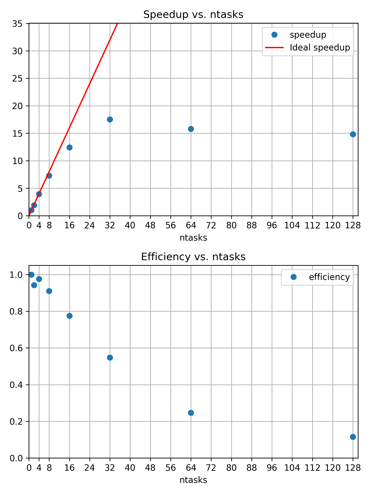
The 16th processor is still close to 80% efficient. The corresponding speedup is less than the theoretical optimum, which is visualized by a red line of slope \(1\).
There is no exact optimum and the best working point is open for discussion. However, it would be difficult to justify additional cores, if their contribution to speedup is only 50% efficient or even less.
If you have experience with python, you can use our python script to create the
same plots as above, but for your own data. It depends on
numpy, pandas, and matplotlib, so
make sure to prepare a corresponding python environment.
The script expects your .csv files to be called
strong.csv and weak.csv, and be placed in the
same directory.
So far, we kept the workload size fixed to \(800 \times 800\) pixels and \(128\) samples per pixel for the same scene with three snowman. The diminishing returns for adding more and more parallel processors leads to a famous observation. The speedup of a program through parallelization is limited by the execution time of the serial fraction that is not parallelizable. No application is 100% parallelizable, so adding an arbitrary amount of parallel processors can only affect the parallelizable section. In the best case, the execution time gets reduced to the serial fraction of the application.
An application is said to scale strongly, if adding more cores significantly reduces the execution time.
Amdahls Law1
The speedup of a program through parallelization is limited by the execution time of the serial fraction that is not parallelizable. For a given execution time \(T(N) = s + \frac{p}{N}\), with \(s\) the time for the serial fraction, and \(p\), the time for parallel fraction, speedup \(S\) is defined as \[S(N) = \frac{s+p}{s+\frac{p}{N}} = \frac{1}{s + \frac{p}{N}} \Rightarrow \lim_{N\rightarrow \infty} S(N) = \frac{1}{s}\]
Discussion: When should we stop adding CPU cores?
Discuss your previous results and decide on a good working point. How many cores are still usefully reducing the execution time.
What other factors could affect your decision, e.g. available hardware and corresponding waiting times.
If scaling is limited, why are there larger HPC systems? Weak scaling.
For a fixed problem size, we observed that adding more parallel processors can only help up to a certain point. But what if the project benefits from increasing the workload size? Does a higher resolution, more accuracy, or more statistics, etc., improve our insights and results? If that is the case, the perspective on the issue changes and adding more parallel processors can become more feasible as well. For our raytracer example, increasing the workload corresponds to more pixels, more samples per pixel, and/or a more complex scene.
Weak scaling refers to the scaling behavior of an application for a fixed workload per parallel processing unit, e.g. increasing the number of pixels by the same amount as the number of parallel processors \(N\).
Gustafsons Law2
A program scales on \(N\) parallel processors, if the problem size also scales with the number of processors. The speedup \(S\) becomes \[\text{S(N)} = \frac{s+pN}{s+p} = s+pN = N+s(1-N)\] with \(N\) processors, \(s\) the time for the serial fraction, and \(p\), the time for parallel fraction:
To scale the workload of the snowman raytracer, we can increase the number of calculated pixels with the same factor with which we increase the number of parallel processors. For one processor we have \(800 \times 800 = 640000\) pixel. That means for two processors we need a height and a width of \(\sqrt{2 \times 640000} = 1131.371 \approx 1131\). And similarly increasing the number of pixels for \(--ntasks=4\) and so on.
The job script could look like this:
BASH
#!/usr/bin/bash
#SBATCH --time=01:00:00
#SBATCH --nodes=1
#SBATCH --mem-per-cpu=3800MB
module load 2025 GCC/13.2.0 OpenMPI/4.1.6 buildenv/default Boost/1.83.0 CMake/3.27.6 libpng/1.6.40
# Create associative array
declare -A pixel
pixel[1]="800"
pixel[2]="1131"
pixel[4]="1600"
pixel[8]="2263"
pixel[16]="3200"
pixel[32]="4526"
pixel[64]="6400"
time mpirun -- ./build/raytracer -width=${pixel[${SLURM_NTASKS}]} -height=${pixel[${SLURM_NTASKS}]} -spp=128 -threads=1 -png "$(date +%Y-%m-%d_%H%M%S).png"To scale the workload of the snowman raytracer, we can multiply the
number of parallel MPI processes, ${SLURM_NTASKS}, with the
samples per pixel (starting from -spp=128). For a single
process, the whole \(800 \times 800\)
pixel picture is calculated in a single MPI process with 128 per pixel.
Running with two MPI processes, both have to calculate half the number
of pixels, but twice the amount of samples per pixel.
BASH
#!/usr/bin/bash
#SBATCH --time=01:00:00
#SBATCH --nodes=1
#SBATCH --mem-per-cpu=500MB
module load 2025 GCC/13.2.0 OpenMPI/4.1.6 buildenv/default Boost/1.83.0 CMake/3.27.6 libpng/1.6.40
SPP="$[${SLURM_NTASKS}*128]"
time mpirun -- ./build/raytracer -width=800 -height=800 -spp=${SPP} -threads=1 -png "$(date +%Y-%m-%d_%H%M%S).png"

In direct comparison, and zooming in really close, you can see more noise in the first image, e.g. in the shadows. One could argue that we passed the point of diminishing returns, though. Is a \(64\times\) increase in computational cost worth the observed quality improvement? For the samples per pixel, we seem to not benefit much from weak scaling. Larger resolutions, by increasing the number of pixels, is the more useful dimension to increase in this case.
Increasing the resolution may be worth the effort, if we have a use for a larger, more detailed picture. In practice, there is a cutoff, beyond which no reasonable improvement is to be expected. This is a question about accuracy, error margins, and overall quality, which can only be answered in the specific context of each research project. If there is no real improvement by increasing the workload, running a weakly scaling application is really just wasting valuable computational time and energy.
If we increase the workload at the rate as our number of parallel processes (\(N\)) our speedup is defined as \[S_{\text{weak}}(N) = \frac{T(1)}{T(N)} \times N\] since we do \(N\) times more work with \(N\) processors, compared to our reference \(T(N=1)\). Efficiency is still defined as \[\eta_{\text{weak}}(N) = \frac{S_{\text{weak}}(N)}{N} = \frac{T(1)}{T(N)}\]
Exercise: Weak scaling
Repeat the previous scaling study and increase the number of pixels accordingly to study the raytracers weak scaling behavior.
- Run with 1, 2, 4, 8, 16, 32, 64 MPI processes on single node
- Take
timemeasurements and consider running with--exclusiveto ensure more reliable results. - Create a
.csvfile and run the plotting script
ntasks,pixel,time,speedup,efficiency
1,800,123.162
2,1131,122.562
4,1600,124.522
8,2263,125.606
...How well does the application scale with an increasing workload size?
Do you see a qualitative difference in the resulting .png
files and is the increased sample-per-pixel size worth the computational
costs?
ntasks,pixel,time,speedup,efficiency
1,800,123.162
2,1131,122.562
4,1600,124.522
8,2263,125.606
16,3200,125.803
32,4526,130.137
64,6400,138.636The scaling behavior is reaching an asymptotic limit, where each additional processor is contributing with the same efficiency to the increased workload.
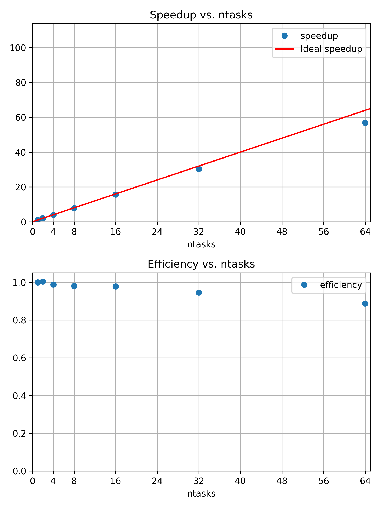
Weakly scaling jobs can make efficient use of a huge amount of resources.
The most important question is, if an increased workload is producing useful results. Here, we have the rendered picture of three snowmen in 800x800 with 128 samples per pixel and three snowmen in 6400x6400 with 128 samples per pixel. The second image has a much higher resolution. However, going way beyond \(6400 \times 6400\) pixels is probably not very meaningful, unless you are trying to print the worlds largest ad boards or similar.
{kind=link}
{kind=link}
Summary
In this episode, we have seen that we can study the scaling behavior of our application with respect to different metrics, while varying its configuration. Most commonly, we study the execution time of an application with an increasing number of parallel processors. In such a scaling study, we collect comparable walltime measurements for an increasing number of Slurm tasks of a parallelizable and representative job. If a good working point is found, larger scale “production” jobs can be submitted to the HPC system.
If the application has good strong scaling behavior, adding more cores leads to an effective improvement in execution time. We observe diminishing returns of adding more cores to a fixed-size problem, so there is a (subjective) optimal number of parallel processors for a given application configuration. (Amdahls Law)
If increasing the workload size leads to better results, maybe because of improved accuracy and quality, we can study the weak scaling behavior and increase the workload size by the same factor of increasing parallel processors.
A good working point depends on the availability of resources, specifics of the underlying hardware, the particular application, and a particular configuration for the application. For that reason, scaling studies are a common requirement for formal compute time applications to prove an efficient execution of a given application.
We can study the impact of any parameter on metrics like, for example, walltime, CPU utilization, FLOPS, memory utilization, communication, output size on disk, and so on.
If you find yourself repeating similar measurements over and over again, you may be interested in an automation approach. This can be done by creating reproducible HPC workflows using JUBE, among other things.
Up to now, we were still working with basic metrics like the wall-clock time. In the next episode, we start with more in-depth measurements of many other aspects of our job and application.
- Jobs behave differently with increasing parallel resources and fixed or scaling workloads
- Scaling studies can help to quantitatively grasp this changing behavior
- Good working points are defined by configurations where more cores still provide sufficient speedup or improve quality through increasing workloads
- Amdahl’s law: speedup is limited by the serial fraction of a program
- Gustafson’s law: more resources for parallel processing still help, if larger workloads can meaningfully contribute to project results
G. M. Amdahl, ‘Validity of the single processor approach to achieving large scale computing capabilities’, in Proceedings of the April 18-20, 1967, spring joint computer conference, in AFIPS ’67 (Spring). New York, NY, USA: Association for Computing Machinery, Apr. 1967, pp. 483–485. doi: 10.1145/1465482.1465560.↩︎
J. L. Gustafson, ‘Reevaluating Amdahl’s law’, Commun. ACM, vol. 31, no. 5, pp. 532–533, May 1988, doi: 10.1145/42411.42415.↩︎
Content from Performance Overview
Last updated on 2026-07-28 | Edit this page
Overview
Questions
- Is job wall-time the only way to study job performance?
- What are commonly used metrics to describe job performance?
- What are common workflows to evaluate performance?
- How can I find the bottlenecks in a given job?
Objectives
After completing this episode, participants should be able to …
- Create a comprehensive performance overview through dedicated tools.
- Explain the difference between sampling and tracing.
- Measure utilization and the impact of underlying hardware components.
- Determine if their job is affected by a typical performance bottleneck pattern.
Wall-time measurements with time do not tell us why
exactly an application is slower than expected. To learn more about the
why, we have to measure our applications behavior in more
detail and capture the utilization of underlying hardware.
The performance measurement tool
ClusterCockpit: A job monitoring service available on many clusters in NRW. Sampled measurements of the application are stored and visualized in a timeline for each job. It needs to be centrally provided by your HPC administration team and may not be available to you!
This tool may require access to performance counters, sometimes
granted by requesting --exclusive, but it really depends on
the system. If something covered in this episode isn’t available or
looks different on your cluster, check your cluster documentation or ask
your HPC support staff.
Let us set up our performance measurement tool by running an example
job with 8 cores. To give the job enough work to be worth measuring,
let’s go with \(2263 \times 2263\)
pixels and -spp=512, we repeat this experiment twice back
to back.
A single run finishes quickly and would give ClusterCockpit only a
handful of samples to plot, making the timelines look sparse and hard to
read. Running it twice stretches the job out to a longer time, giving
the sampling-based collectors enough time to gather a richer set of data
points, which makes for much clearer plots when we look at the metrics.
Additionally, we limit the execution time to 20 minutes to not wait too
long, before getting the results. It does not hurt us, if the job gets
cut off by the Slurm TIMEOUT, since the measurements will
still represent the applications behavior up to that point.
Submit a job that runs for at least \(5\) minutes, so it is picked up by cluster cockpit. The job could look like this:
BASH
#!/usr/bin/bash
#SBATCH --time=00:20:00
#SBATCH --partition=intelsr_devel
#SBATCH --ntasks=4
#SBATCH --cpus-per-task=1
#SBATCH --nodes=1
#SBATCH --exclusive
module purge
module load GCC/13.2.0 OpenMPI/4.1.6-GCC-13.2.0 CMake/3.27.6-GCCcore-13.2.0 Boost/1.83.0-GCC-13.2.0 libpng/1.6.40-GCCcore-13.2.0
for i in {1..3}; do
mpirun -- ./build/raytracer -width=2263 -height=2263 -spp=512 -threads=1 -png "img_${SLURM_JOB_ID}_$(date +%Y-%m-%d_%H%M%S).png"
doneWe will call this job 1. Note the use of --exclusive
here, which books a whole node for the job. This is important to make
sure the performance measurements are not disturbed by concurrent jobs.
Additionally, ClusteCockpit collects some metrics only on a per-node
basis, so concurrent jobs would make these measurements less usable
Exercise: Run a second job with
raytracer_float4
Submit a second job using the raytracer_float4
executable instead of raytracer — keep the resolution,
-spp, core count, repeat count, and
--exclusive request all the same as the original job.
We will call this job 2.
There are other binaries next to the raytracer example,
called raytracer_float4, _float8,
_float16. We can start one of those in our job script
instead:
BASH
#!/usr/bin/bash
#SBATCH --time=00:20:00
#SBATCH --partition=intelsr_devel
#SBATCH --ntasks=4
#SBATCH --nodes=1
#SBATCH --cpus-per-task=1
#SBATCH --exclusive
module purge
module load GCC/13.2.0 OpenMPI/4.1.6-GCC-13.2.0 CMake/3.27.6-GCCcore-13.2.0 Boost/1.83.0-GCC-13.2.0 libpng/1.6.40-GCCcore-13.2.0
for i in {1..3}; do
mpirun -- ./build/raytracer_float4 -width=2263 -height=2263 -spp=512 -threads=1 -png "$(date +%Y-%m-%d_%H%M%S).png"
doneWhile the test jobs are running, let’s look into the relationship between computer hardware architecture and performance.
Hardware Architecture & Counters
Broadly categorized, a jobs performance is mostly dependent on
- CPU utilization, e.g. how quickly instructions can be send to the processor, how quickly and how much data can be read from memory, and the raw calculation capabilities of the CPU.
- Memory utilization may vary in terms of how much data is stored in memory, how often data in memory is written or read, and how quickly the data can be read and written to.
- Disk input and output affects jobs that work with amounts of data that exceed available memory capacities.
- Network input and output affects applications that rely on remote data, e.g. MPI applications that regularly share results between processes on multiple worker nodes.

Measurement Workflows
To learn how applications utilize the computers hardware, we employ third party tools that read usage metrics from performance counters, often implemented either in the operating system kernels (software) or in hardware.
Dedicated performance measurement tools often employ similar methods and rely on the same sources of information, but they my focus on different issues and use different data processing and visualization methods.
In general there are two approaches to performance measurements:
- Sampling: Read out performance counters and the application state at regular intervals during execution
- Tracing: Record every event and operation that occurs
Tracing is exact and allows for a very detailed analysis. On the other hand, it results in very large amounts of measurement data that even affects the applications performance during data collection. It may be impractical in some situations.
Sampling on the other hand is less exact and results in a statistical description of the applications behavior. Sampling has a smaller measurement overhead, but may suffer from, for example, slight mis-attributions of measurements to wrong sections of the code and fluctuating results between repeated measurements.
Measurement results are either stored and analysed in a timeline, or aggregated into a final measurement, often called a profile.
General Report
Going back to our Cluster Cockpit results, log in to the
ClusterCockpit web interface of your HPC system, as explained in your
cluster documentation. Go to My Jobs and click on the job 1
with the same Slurm job id, once it is available

As a first step, to go beyond a wall-time analysis, we employ the measurement tool to produce a general overview of our applications behavior. Here, we typically try to answer questions like:
- Are available CPU, memory, disk, and network capabilities utilized well?
- Dose the jobs performance depend on a particular hardware component?
- Is there an obvious contention point that could be eliminated?
First Overview
The job view of a particular job in ClusterCockpit begins with three summary panels for the job.
The Job Info panel summarizes Slurm metadata about the job, e.g. job ID, accounts, start time, duration, etc.
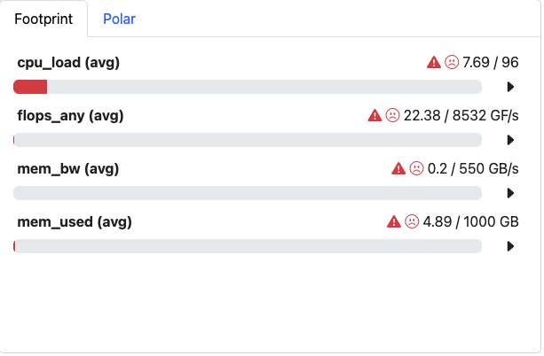
The Footprint panel summarizes a preconfigured set of performance characteristics for the job. It categorizes values in a traffic-light system, so yellow and red indicators motivates further investigation. The exact list and type of metrics depends on the ClusterCockpit configuration, which is prepared by the administrator of the service.
Here, all four values are not in acceptable range. We see why:
-
cpu_load (avg)is shown in red. Since we requested the node with--exclusive, we were given all \(96\) cores of the node, but our job only uses \(8\) of them. The footprint compares load against the full \(96\) cores that are requested by us, so it correctly flags that most of the requested resources are sitting idle. This is underutilization of requested resources. -
flops_any (avg)is Floating Point Operations per second. In this case, it is calculated as \(22.38 GF/s\), which is far below what the node can theoretically achieve. It can point to anything from not utilizing the hardware features to simply not needing many floating point operations at all. -
mem_used (avg)shows the memory utilization of the job. This, together with the bandwidth metric below, is exactly why we requested an exclusive node in the first place: memory- and energy-related hardware counters are not available at a per-core granularity. They are measured at socket level or node level rather than per core, so running exclusively is what keeps them meaningful for our job alone. -
mem_bw (avg)is the memory bandwidth, i.e. how much data is transferred to and from memory per second.
Granularity of Metrics
Not every metric ClusterCockpit shows describes your job. Some describe the whole CPU socket, or even the whole node, regardless of how many cores your job actually occupies. The underlying collectors read hardware performance counters that are simply wired up at a particular level of the machine, and they have no notion of which Slurm job is currently running. This is true regardless of which monitoring tool you use, but it is essential to understand for reading ClusterCockpit correctly.
Metrics come in three granularities:
-
Core-level: measured separately for each individual
CPU core, e.g.
cpu_user,ipc,flops_any. These are meaningful for your job even if other jobs share the same node, since each core is attributed to exactly one job. -
Socket-level: measured once for an entire CPU
socket (which may host several cores of several different jobs),
e.g.
mem_bwand the package power reading behind the Energy panel (pkg_pwr). If another job shares your socket, its memory traffic or power draw is mixed into your measurement. -
Node-level: measured once for the whole compute
node, e.g.
cpu_load,mem_usedand network or filesystem metrics. These are effected by every job on the node, not just yours.
Each metric plot in ClusterCockpit has a small drop-down menu as shown in image below, typically labelled core, socket, or node. This label tells you directly at which granularity that particular chart was measured — a core selection means one line per core of your job, while socket or node means the value is shared with (and possibly polluted by) other jobs. If the drop-down only offers socket or node, treat the value with more caution unless you know the node was exclusively yours
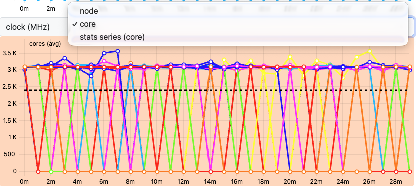
This is precisely why we requested --exclusive when
submitting our job earlier in this episode: on a node reserved
exclusively for our job, socket- and node-level metrics describe our job
alone, since there is nothing else running to mix into the measurement.
If you cannot use --exclusive, for example because your
allocation only ever needs a fraction of a node, keep an eye on which
granularity a given metric is measured at, and treat socket- or
node-level values as an upper bound that may include other jobs’
activity rather than a precise reading of your own.

More detailed plots for each individual metric are available and can be configured through the Select Metrics button.
In general, the footprint panel gives the most information on what issues our job may have and where to start the investigation. In our case:
- We can utilize all \(96\) cores instead of just \(8\) to make use of the full exclusive allocation.
- We can try to improve either
flops_anyormem_bw. To know which one actually makes sense to target, we need to look at the next panel, the Roofline plot.
How to read a Roofline Plot
Before looking at our job’s result, here’s what to expect on Roofline plot and how to understand the plot. Here is the example Roofline Plot:
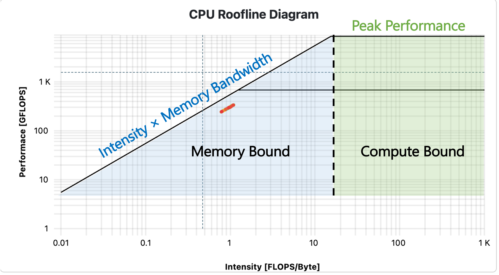
In jobs performing floating point operations on data read from memory, i.e. any numeric operation, which are very common in HPC, a Roofline plot is a common visualization of the jobs performance.
- The x-axis is operational intensity: how many floating point operations are performed per byte loaded from memory. The y-axis is achieved performance: floating point operations per second.
- A diagonal line marks the maximum performance possible. \[P_{peak} = \min(\text{Memory Bandwidth} \times \text{Operational Intensity},\ \text{Flop/s}_{peak})\]
- A job with low intensity i.e. high memory transfers is pinned close to diagonal line: memory is the bottleneck, no matter how fast the CPU could otherwise compute.
- The two horizontal lines mark the maximum performance possible if CPU computation itself is the limit: lower line for scalar operations, a higher one once vectorized instructions are used.
- Where the diagonal and horizontal lines meet is the knee. Left of the knee = memory bound (data movement is the bottleneck). Right of the knee = compute bound (calculation capability is the bottleneck).
- The colored dots show measurements taken at different points in time during the job’s run, following a blue-to-red gradient: blue marks the start of the application, red marks the end. Their position relative to the rooflines shows how close each phase of execution came to the physical performance limits, and how that changed over the runtime.
Below is the Roofline plot for our application.
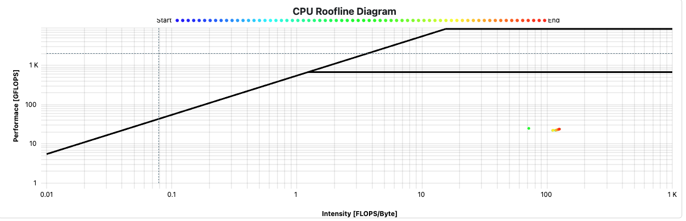
Take a moment to look at where our raytracer’s dot(s) land on the plot.
- Is the job compute bound or memory bound? Which side of the knee do the measurements fall on?
- Do the dots sit close to the scalar roofline, or closer to the vectorized roofline? What does that tell you about whether the application is actually using vectorized instructions?
- Given where the job sits, which metric is more interesting for our
next investigation —
flops_any, ormem_bw? Which one, if improved, would actually move the dot closer to a roofline? - Does the dot’s position stay roughly constant over the blue-to-red timeline, or does it drift? What might cause a job to move further from (or closer to) the roofline as it runs?
CPU Metrics
CPU performance can be categorized in
- Front-end utilization: preparation and scheduling of instructions of program code provided through the cache hierarchy
- Computation: Arithmetic and logical operations with various data types, including the utilization of vectorized instructions, etc.
- Back-end utilization: loading and storing of data in the cache hierarchy
The front- and backend hardware of a physical CPU core is often duplicated to implement simultaneous multithreading (SMT, also called hyperthreading). Here, the arithmetic logical unit receives data and instructions from two independent threads to achieve a sufficient amount, which is a common limiting factor in everyday calculations. On HPC systems, the benefit of SMT is very much application-dependent. It is often disabled on HPC systems, since code is optimized to maximize computational intensity.
ClusterCockpit captures many dedicated CPU metrics and provides a timeline visualization for each.
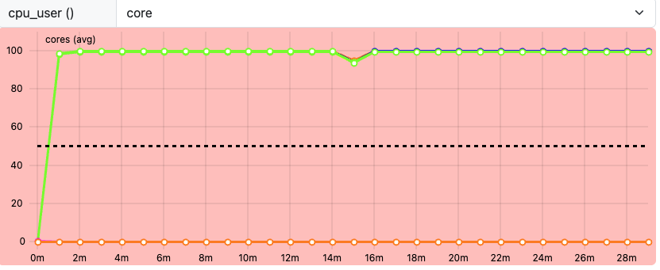
cpu_user shows, per core, the share of CPU time spent
executing our application’s own instructions, as opposed to time spent
in kernel/system activity or sitting idle. A high cpu_user
near \(1\) is a good sign: the core is
busy, and busy doing our work rather than system overhead. A
core sitting noticeably below \(1\) is
worth a closer look. Some of its time is going to something other than
our application’s own instructions, whether that’s kernel activity,
waiting, or other overhead. A cpu_user of \(0\) means the core was idle for that
interval and not running our application at all.
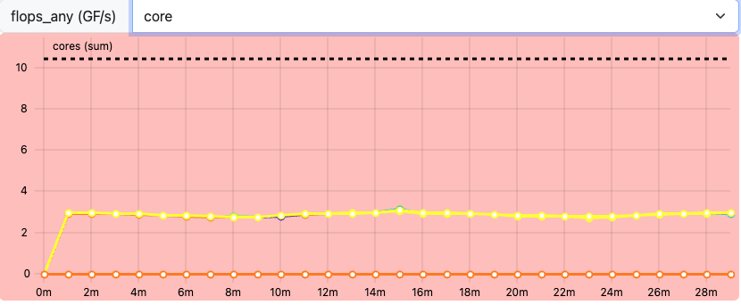
flops_any captures any floating point operation on Intel
CPUs, at core-level granularity, with single- and double-precision
operations accumulated into the same value. Recall from the Footprint
panel that our job’s flops_any (avg) sat at only \(22.38\) GF/s, while the node’s theoretical
peak is \(8532\) GF/s.
That gap looks enormous, but it isn’t a fair comparison yet: the \(8532\) GF/s peak is for all \(96\) cores of the exclusive node, while our job only ever uses \(8\) of them. Scaled down to \(8\) cores, the theoretical peak is roughly \(711\) GF/s, so \(22.38\) GF/s is still well below what our \(8\) cores could theoretically achieve, but nowhere near the dramatic 96-core gap the raw numbers first suggest. This isn’t a contradiction of the Roofline plot classifying the job as compute bound either way: compute bound only means the CPU’s calculation capability is the limiting factor relative to how little data is moved, not that the job is issuing many floating point operations specifically.
Exercise: Compare flops_any
between job 1 and job 2
We now have two jobs to compare: our job1 (raytracer)
and a job2 run with the raytracer_float4 executable.
Look at the flops_any metric for both jobs. What’s
different between them, and why?
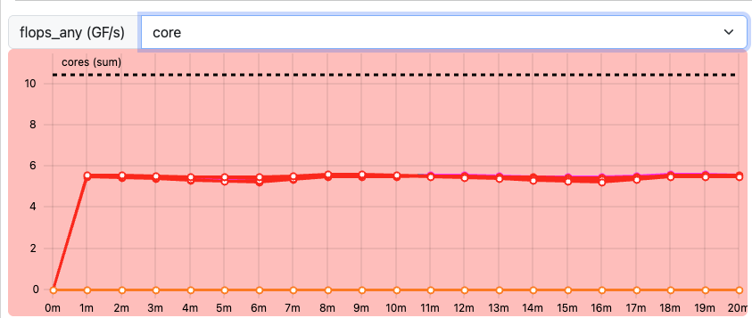
In our measurements, flops_any (avg) per core is close
to \(3\) GF/s for job 1, and close to
\(6\) GF/s for job 2, roughly a \(2\times\) increase.
raytracer_float4 uses SIMD: float4
corresponds to SSE2 vectorized instructions, where a single instruction
operates on \(4\) float operands at
once, instead of one operand at a time as in the original scalar
raytracer.
flops_any counts floating point operations regardless of
whether they were issued as scalar or vectorized instructions, each
vectorized instruction in job 2 is counted as \(4\) floating point operations rather than
\(1\). As a result,
flops_any (avg) for job 2 is noticeably higher than for job
1. For the same amount of work done, the vectorized version
issues far fewer instructions to do it, and each one accomplishes \(4\times\) as much.
This is also a good moment to connect back to the Roofline plot: job 2’s dots sit slightly higher on the plot than job 1’s, and also shift further right along the x-axis — since computing more FLOPs per byte loaded raises the operational intensity too. They don’t touch the upper, vectorized roofline yet — that would become more visible if we used the full node instead of just \(8\) of its \(96\) cores.
Our raytracer performs plenty of integer, branching, and
memory-addressing work per byte loaded, which does not count towards
flops_any. This is why a low flops_any is not
necessarily a red flag here. On top of that, our original raytracer is
not vectorized. It issues one scalar floating point operation at a time
rather than operating on multiple values per instruction, which further
caps how high flops_any can climb regardless of how well
the rest of the code performs.
Memory Metrics
Memory utilization is characterized in terms of used capacity, bandwidth and access latencies.
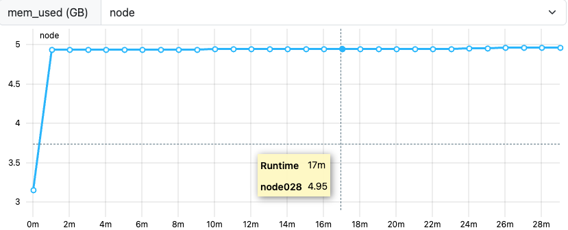
mem_used sits at approximately \(5\) GB for our job, shown as an almost
flat, straight line across the runtime, which is a good sign. A flat
line means memory consumption is stable once the application has
allocated what it needs. A slanted, steadily increasing line instead
would be a warning sign of a memory leak: memory that
is allocated but never freed, growing continuously over the job’s
runtime instead of leveling off.
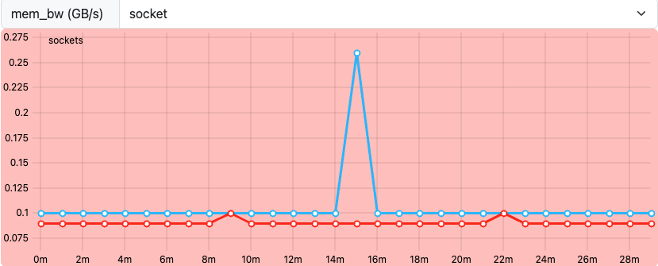
mem_bw is a socket-level metric. It
measures how much memory is transferred to and from a given CPU socket
per second, not per individual core. Since our node has multiple
sockets, you’ll typically see a different mem_bw value
reported for each socket. This difference depends entirely on which
cores on each socket are actually active and running part of the
application: a socket with more of our job’s cores running on it will
show higher memory traffic than a socket with fewer (or none) of them
active.
Energy
Depending on the ClusterCockpit configuration, an energy demand is displayed below the job info panels. This measurement is highly dependent on hardware configurations of your HPC systems, so the estimates may vary. They are often based on CPU package power measurements, which are unlikely to cover the whole energy demand of the node, e.g. omitting disks, fans, etc. In other cases, the energy may be estimated from power supply measurements and scaled to CPU activity to get a more accurate estimate.
These estimates often still not include network, parallel filesystem components and cooling of the clusters. Nevertheless, the estimate is a great tool to identify the scale of the jobs energy demand.
Miscellaneous
Typically, many more measurements and perspectives on the data are available for each tool.
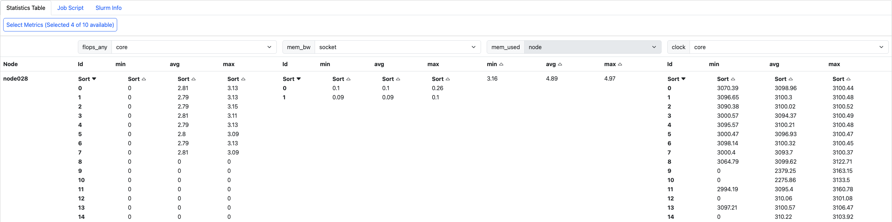
ClusterCockpit provides a detailed statistics table covering all measurements involved with a job. Alongside this table, you can also see your job script and Slurm info, which tells you how much of each resource was actually allocated to your job. The statistics table itself shows the max, min, and avg values for whichever metrics have been configured for your ClusterCockpit deployment.
How to identify a bottleneck?
Exercise: Match application behavior to hardware
Which parts of the computer hardware may become a point of contention for these application patterns:
- Calculating matrix multiplications
- Reading data from processes on other computers
- Calling many different functions from many equally likely if/else branches
- Writing very large files (TB)
- Comparing strings for matches
- Constructing a large simulation model
- Reading thousands of small files for each iteration
Maybe not the best questions, also missing something for accelerators.
- CPU (FLOPS), maybe the cache hierarchy if matrix elements do not align well to cache sizes
- I/O (network)
- CPU (Front-End), difficult to prepare instructions in time
- I/O (disk), bandwidth limited
- CPU (Back-End), getting strings through the caches
- Memory (capacity)
- I/O (disk)
Summary
Dedicated performance measurement tools are helpful to create reports of the general job behavior. These tools either trace every event, or sample the application and hardware state at regular intervals. Many tools are available, but some may have to be set up by the HPC system administrators, or rely on valid licenses.
The relationship between a job and the execution on physical hardware can become a very deep topic. One of these topics is the correct mapping of job processes to the requested number of CPU cores, addressed in the next episode.
- Performance tools measure data as regular samples or by tracing every event
- The data is either processed and visualized in a timeline or aggregated in a final profile
- Job performance relates closely to contention points in physical
hardware
- CPU utilization (front-end, ALU, back-end), multithreading, vectorization
- Memory utilization (capacity, bandwidth, latency)
- Disk I/O
- Network I/O
Content from Pinning
Last updated on 2026-07-28 | Edit this page
Overview
Questions
- What is “pinning” of job resources?
- How can pinning improve the performance?
- How can I see, if pinning resources would help?
- What requirement hints can I give to the scheduler?
Objectives
After completing this episode, participants should be able to …
- Define the concept of “pinning” and how it can affect job performance.
- Name Slurms options for memory- and cpu- binding.
- Use hints to tell Slurm how to optimize their job allocation.
The benchmark code used in this episode
Let us first prepare a so-called benchmark for doing some pinning experiments in this episode. In a HPC context, a benchmark is a software that implements and runs CPU- and memory-intensive computations in a well-measurable way. Many different benchmarks exist. Here, we employ the STREAM benchmark, because it is deliberately designed to mimic computations that are memory-bandwidth limited.
The STREAM benchmark may already be available on your system. Check
the module environment. If not, it can be installed
with:
BASH
# download, it is only a single C-program
wget https://www.cs.virginia.edu/stream/FTP/Code/stream.c
# compile, may need appropriate module to make gcc available, enable OpenMP
gcc -O3 -fopenmp -DSTREAM_ARRAY_SIZE=100000000 -DNTIMES=20 stream.c -o streamThis creates the executable stream.
Running stream
To get aquainted with the output of stream, run it:
An sample output is:
OUTPUT
-------------------------------------------------------------
STREAM version $Revision: 5.10 $
-------------------------------------------------------------
This system uses 8 bytes per array element.
-------------------------------------------------------------
Array size = 100000000 (elements), Offset = 0 (elements)
Memory per array = 762.9 MiB (= 0.7 GiB).
Total memory required = 2288.8 MiB (= 2.2 GiB).
Each kernel will be executed 20 times.
The *best* time for each kernel (excluding the first iteration)
will be used to compute the reported bandwidth.
-------------------------------------------------------------
Number of Threads requested = 192
Number of Threads counted = 192
-------------------------------------------------------------
Your clock granularity/precision appears to be 1 microseconds.
Each test below will take on the order of 12271 microseconds.
(= 12271 clock ticks)
Increase the size of the arrays if this shows that
you are not getting at least 20 clock ticks per test.
-------------------------------------------------------------
WARNING -- The above is only a rough guideline.
For best results, please be sure you know the
precision of your system timer.
-------------------------------------------------------------
Function Best Rate MB/s Avg time Min time Max time
Copy: 179291.6 0.014355 0.008924 0.019452
Scale: 184755.8 0.013567 0.008660 0.015317
Add: 175990.9 0.015244 0.013637 0.016602
Triad: 172339.1 0.015706 0.013926 0.020396
-------------------------------------------------------------
Solution Validates: avg error less than 1.000000e-13 on all three arrays
-------------------------------------------------------------Understanding the output
The benchmark reports the achieved memory bandwidth for four simple operations:
Copy: a[i] = b[i]
Scale: a[i] = q * b[i]
Add: a[i] = b[i] + c[i]
Triad: a[i] = b[i] + q * c[i]These are operations that make up the main work in numerical codes when they loop over large arrays. Improving code efficiency involves minimizing the overhead associated with accessing the memory of such large arrays during computations. This is where pinning (or binding) will come into play later in this episode. The reported Best Rate (MB/s) is the highest sustained memory bandwidth achieved for each operation.
The first notable metric is the “Number of Threads” (requested and
counted, here 192). This should appear given that stream
was compiled with OpenMP (-fopenmp). We will treat threads
in more detail soon. The other output of interest is the bandwidth in
MB/s reported at the bottom for the four types of array operations,
copy, scale, add and triad. The higher the bandwidth, the faster these
array operations can complete.
Setting up the HPC kitchen: CPUs, processes, threads, tasks
We first want to agree on some terminology. This is motivated by the fact that in HPC the same words can mean slightly different things depending on whether you are talking about the operating system, the scheduler (Slurm), or in the context of a parallel programming model (MPI or OpenMP). While this episode is called “Pinning”, you will notice that many pinning-related command options contain the string “bind”, also in Slurm. Hence, we will also use the synonym “Binding” in the following.
What is a CPU in a pinning/binding context?
Let us clarify some potential confusion around the word “CPU”, as it is somewhat overloaded. Hardware vendors often use “CPU” to mean the whole processor chip. That chip contains multiple independent execution units:
- A core is the physical execution unit on the chip — the actual hardware that runs instructions.
- A thread is the logical execution unit exposed by a core. If simultaneous multithreading (SMT) is off, one core provides exactly one thread, so the two are the same thing. If SMT is on, one physical core provides two (or more) threads, each independently schedulable.
This physical-vs-logical distinction matters because the number of logical execution units (threads) can be larger than the number of physical cores actually present.
In Linux and Slurm, CPU refers to a thread - logical execution unit - not the physical processor chip. And:
- We will use quite a few Slurm commands below. Slurm command options
often contain “cpu”, for example
--cpus-per-task. This is because a CPU in Slurm is: 1 logical execution unit = 1 Slurm-CPU. - A Slurm-CPU is a schedulable execution unit visible to the operating system.
- In general: 1 Slurm-CPU = 1 physical CPU core, but not always, sometimes with SMT enabled: 2 or more Slurm-CPUs constitute 1 physical CPU core.
- The Slurm option
--cpus-per-taskdetermines how many threads Slurm allocates.
Historically, CPU refers to the physical processor chip. For example, a compute node might have two CPU sockets (two processor chips). If each socket hosts 32 physical cores, we have:
2 physical CPUs (sockets) = 2 x 32 cores = 64 cores = 64 Slurm-CPUsHowever, the physical CPU hardware can pretend to have more cores than physically present. This is called Simultaneous Multithreading (SMT), or Hyperthreading for Intel processors. Then,
2 physical CPUs (sockets) = 2 x 32 cores x 2 SMT threads = 128 logical CPUs = 128 Slurm-CPUsTherefore, on systems without SMT, a Slurm CPU corresponds to a
physical core. On systems with SMT enabled, multiple logical execution
units map onto a physical core. People then also talk about hardware
threads, A hardware thread is a feature of the processor that
allows a core to execute more than one software thread at a time. With
SMT,1 Slurm CPU = 1 hardware thread, and2 Slurm CPUs = 2 hardware threads = 1 physical core.
Be aware that “thread” is another expression being a bit overused. From
now on, we will refer to thread as something only on the software layer.
This will be explained below.
Processes
Time to run our stream program in an “HPC-way”. We are
now on a HPC compute node. You may be on the login node, the landing
point when you ssh-ed from your own machine. In case, you
cannot run jobs on the login node, you will need to allocate some
resources first:
Now we use Slurm’s tool srun for running parallel jobs.
Launch the following two runs:
BASH
# if you did not do the `salloc`: add the option `--mem=4G` after each `srun`.
srun --ntasks=1 ./stream
srun --ntasks=2 ./streamIn the first run, the operating system creates one process
which will be associated with stream. This process is an
isolated entity as it does not directly share the following things with
other processes:
- virtual memory,
- process ID (PID),
- file descriptors.
Think of a process resembling a large kitchen. This kitchen has its own ingredients, utensils, recipes and storage space. Other kitchens do not have direct access to it.
When running the second job with --ntasks=2, Slurm
commissioned two such kitchens. Again, they work independently.
Therefore you see the stream output twice.
Multiple tasks
When running srun --ntasks=2 ./stream, you may have
noticed differing outputs for the two bandwidth summaries (copy, scale,
add ,triad). Why are these not identical?
As in the kitchen analogy, the two tasks (kitchens) run independently, that is, they do not even know about each other.
The two stream tasks denote two independent processes
that may also occupy different (Slurm-)CPU resources. Hence, with
multiple CPUs, their runtimes and bandwidth outcomes will never be
exactly identical.
Tasks
In the above srun commands, Slurm uses the options
--ntasks, and not something like --nprocesses.
A task is Slurm’s term for an independent unit of work that the
scheduler starts, places on resources and manages. In most cases:
1 task = 1 process.
Back to the kitchen analogy. Imagine the stream
computing job would be a catering order. Then, Slurm would be the event
manager. It manages the resources you requested, which may be one
(--ntasks=1) or two (--ntasks=2) kitchens.
Slurm uses the term “task” because it is a scheduler concept rather
than an operating-system concept. While in most HPC applications, one
task corresponds to one process, Slurm is more general by treating a
task as something overarching a process, some kind of workload to be
scheduled onto (Slurm-)CPUs. In other words, the Slurm scheduler doesn’t
manage kitchens directly. Instead, it acts as the event manager making
sure the workload runs on the available resources requested via
--ntasks, and other options.
Now, what about the cooks working in a kitchen? One kitchen can employ one or multiple cooks, in other words, a process can have one or more threads.
Threads
Threads live inside a process and
- share the same memory (kitchen storage space),
- can access the same variables (ingredients and utensils),
- execute concurrently (multiple cooks working simultaneously).
A thread is also referred to as an execution stream within a process that shares memory with other threads in the same process. So the threads are like the cooks being busy in the same kitchen. They can
- share the ingredients,
- share the utensils,
- can cooperate.
Threads may sometimes get in each other’s way, unless they are told not to move around the kitchen by “pinning” them to their work area. We will get to that.
So let’s assign four CPUs to one task:
where now the output for “Number of Threads” will most likely show
the number 4. The stream runtime is programmed such that it
detects four available CPUs and therefore creates four threads by
default.
Multiple cooks: OpenMP
In case you want to try again, put time in front of
every srun and check the parallel against the sum of the
sequential runtimes.
The stream program is an OpenMP-parallel program. The
large loops of array operations are distributed over OpenMP-threads. The
thread number can be set via the environment variable
OMP_NUM_THREADS:
The Slurm option --cpus-per-task determines how many
CPUs Slurm allocates, while OMP_NUM_THREADS determines how
many OpenMP threads the application creates. Slurm does not
automatically force OpenMP to obey --cpus-per-task.
Therefore, users should normally set
after setting CPUs/task via Slurm directives. This sets
number of OpenMP threads = number of CPUs. Otherwise,
ending up with number of OpenMP threads > number of CPUs
would involve an oversubscription of the allocated CPUs.
Remember that stream is an OpenMP-parallel program.
The count is likely reported as
Number of Threads counted = 4. Since stream is
an OpenMP-parallel program, setting OMP_NUM_THREADS=4 will
be evaluated inside the program. However, Slurm only allocated 3 CPUs
via --cpus-per-task=3, which is fine but will oversubscribe
the CPU resources.
In the previous challenge you set OMP_NUM_THREADS. What
happened to it?
Your earlier setting export OMP_NUM_THREADS=4 is still
active, unless you have changed the terminal. Hence, the count is still
reported as Number of Threads counted = 4. If you do
this will indeed produce
Number of Threads counted = 3.
Multiple kitchens: MPI
Before, we assigned multiple threads to one process, that is, we put four cooks into one kitchen. Now suppose, the catering job is so large that one 4-cook kitchen is not enough. This leads to the MPI programming model. Assume the workload requires running two independent kitchens. In fact, we have already done this:
where each task is a separate MPI process. MPI-parallel programs
involve data exchange between processes (or Slurm tasks). Note that
stream it is not programmed to have this feature. However,
like every program, it can be run as multiple independent process
instances.
Multiple cooks + kitchens: OpenMP + MPI
Parallel programs can also combine the OpenMP and MPI models, sometimes referred to as a hybrid model. So let’s now run such a hybrid “2-kitchens, 4-cooks-per-kitchen” job:
This will involve a total of 8 CPUs.
Requesting resources for a hybrid parallel program
You want to request resources for a hybrid OpenMP - MPI parallel
program. The estimated workload consists of two processes where each
process itself involves three threads. What are the two options
submitting an srun command for this?
Remember that a process is almost always equivalent to a Slurm task.
Also, OpenMP uses the environment variable OMP_NUM_THREADS
to set the thread count.
<<<<<<< HEAD ## Managing the kitchen: The Linux scheduler By now, we have gained some decent understanding about tasks and threads and how they make up a parallel run. So we are almost ready to see how to control CPU alignment in parallel runs via pinning. There is one more thing useful to know about.
In our kitchen analogy, we referred to Slurm as the event manager, who takes care of the whole catering job without getting involved with the cooks (CPUs) inside the kitchen(s). However, on the lower kitchen level, there is actually another manager. This is the Linux scheduler. Similar to rotating cooks around the kitchen’s different workstations, where a workstation equates a (Slurm-)CPU, the Linux scheduler may migrate threads between CPUs during execution.
Thread migration happens by default because Linux is designed to optimize overall system responsiveness and throughput, not necessarily the performance of a single process.
How can we observe thread migration? Let’s first create another version of our benchmark. This is a version that will run a bit longer:
Now open a second terminal on the same compute node where you have
been running stream and type
BASH
srun --pty --overlap --jobid=<id> /bin/bash
watch -n 0.5 'ps -eLo pid,tid,psr,comm | grep stream_longThe watch command keeps an eye on repeated calls to
ps which then greps for running stream
processes. Back in the original terminal, employ 12 CPUs by running the
new version, stream_long:
Now, observe the 12 processes showing up in the second terminal. The
numbers in the third column are likely to change occasionally. The
manpage of ps refers to that number as the “processor that
process is currently assigned to”, which in our context is the CPU
number. Threads are being moved around when it changes.
To optimize a selected process entails removing the overhead due to its moving threads. This requires extra directives to keep the cooks at their workstations, so they don’t bump into each other, that is, to pin or bind them.
Binding 1: CPU affinity
Pinning, or binding, is the assignment of processes or threads to specific CPU resources so that the operating system does not freely move them between CPUs. This is also called CPU affinity. In the run
BASH
unset OMP_NUM_THREADS # reset in order to undo earlier settings
srun --ntasks=1 --cpus-per-task=3 --cpu-bind=cores ./streamthe option --cpu-bind=cores binds a task and its threads
to the Slurm CPUs allocated to it. On systems without
SMT/Hyperthreading, these CPUs correspond to physical cores. For
example, suppose the above run allocated CPUs 48-50. Then Slurm will
create an affinity mask like:
Allowed CPUs = {48,49,50} for that task. ======= ##
Motivation :::::::::::::::::::::::::: challenge ## Exercise Case 1: 1
thread per rank
mpirun -n 8 ./raytracer -width=512 -height=512 -spp=128 -threads=1 -alloc_mode=3 -png=snowman.png
Case 2: 2 thread per rank
mpirun -n 8 ./raytracer -width=512 -height=512 -spp=128 -threads=2 -alloc_mode=3 -png=snowman.png
Questions: - Do you notice any difference in runtime between the two cases? - Is the increase in threads providing a speedup as expected?
- Observation: The computation times are almost the same.
- Expected behavior: Increasing threads should ideally reduce runtime.
- Hypothesis: Additional threads do not contribute.
::::::::::::::::::::::::::::::::::::
How to investigate?
You can verify the actual core usage in two ways: 1. Use
--report-bindings with mpirun 2. Use
htopcommand on the compute node
Exercise
Follow any one of the option above and run for 2 threads per rank
mpirun -n 8 ./raytracer -width=512 -height=512 -spp=128 -threads=2 -alloc_mode=3 -png=snowman.png
Questions: - Did you find any justification for the hypothesis we made?
Only 8 cores are active instead of 16
Explanation:
- Eventhough we requested 2 threads per MPI rank, both threads are pinned to the same core.
- The second thread waits for the first thread to finish, so no actual thread-level parallelization is achieved.
How to achieve?
Exercise: Understanding Process and Thread Binding
Pinning (or binding) means locking a process or thread to a specific hardware resource such as a CPU core, socket, or NUMA region. Without pinning, the operating system may move tasks between cores, which can reduce cache reuse and increase memory latency, directly diminishes performance.
In this exercise we will explore how MPI process and thread binding works. We will try binding to core, socket, and numa, and observe timings and bindings.
Exercise
Case 1: --bind-to numa
mpirun -n 8 --bind-to numa ./raytracer -width=512 -height=512 -spp=128 -threads=12 -alloc_mode=3 -png=snowman.png
Case 2: --bind-to socket
mpirun -n 4 --bind-to socket /raytracer -width=512 -height=512 -spp=128 -threads=48 -alloc_mode=3 -png=snowman.png
Questions: - What is difference between Case 1 and Case 2. Any difference in performance? How many workers? - How could you adjust process/thread counts to better utilize the hardware in Case 2?
- MPI and thread pinning is hardware-aware.
- If the number of processes matches the number of domains (socket or NUMA), then the number of threads should equal the cores per domain to fully utilize the node.
- No speedup in Case 2: Oversubscription occurs because we requested 4 processes on a system with only 2 sockets.
- Threads compete for the same cores → OpenMPI queues threads and waits until other processes finish.
Best Practices for MPI Process and Thread Pinning
Mapping vs. Binding Analogy
Think of running MPI processes and threads like booking seats for a group of friends:
-
Mapping is like planning where your group will sit
in the theatre or on a flight.
- Example: You decide some friends sit in Economy, some in Premium
Economy, and some in Business.
- Similarly,
--map-bydistributes MPI ranks across nodes, sockets, or NUMA regions.
- Example: You decide some friends sit in Economy, some in Premium
Economy, and some in Business.
-
Binding is like reserving the exact seats for each
friend in the planned area.
- Example: Once the seating area is chosen, you assign specific seat
numbers to each friend.
- Similarly,
--bind-topins each MPI process or thread to a specific core or hardware unit to avoid movement.
- Example: Once the seating area is chosen, you assign specific seat
numbers to each friend.
This analogy helps illustrate why mapping defines placement and binding enforces it.
We will use --bind-to core (the smallest hardware unit)
and --map-by to distribute MPI processes across sockets or
NUMA or node regions efficiently.
Choosing the Smallest Hardware Unit
Binding processes to the smallest unit (core) is recommended because:
Exclusive use of resources
Each process or thread is pinned to its own core, preventing multiple threads or processes from competing for the same CPU.Predictable performance
When processes share cores, execution times can fluctuate due to scheduling conflicts. Binding to cores ensures consistent timing across runs.
- Best practice: Always bind processes to the smallest unit (core) and
spread processes evenly across the available hardware using
--map-by. - Example options:
-
--bind-to core→ binds each process to a dedicated core (avoids oversubscription).
-
--map-by socket:PE=<threads>→ spreads given number of threads as a processing element across the socket -
--map-by numa:PE=<threads>→ spreads processes across NUMA domains, assigning<threads>cores per process. - similarly
--map-by numa:PE=<threads> -
--cpus-per-rank <n>→ Assigns<n>cores (hardware threads) to each MPI rank - ensuring that all threads within a rank occupy separate cores.
-
Exercise
Use the given best practices above for case 1: -n 8,
-threads=1 and case 2: -n 8,
-threads=4 and answer following questions
Questions: - How many cores does the both jobs use? - Did you get more workers than you requested? - Did you see the scaling when running with 4 threads?
- 8 and 32
- No.
- Yes
origin/pinning
Displaying information about the CPU
architecture: lscpu
The command lscpu gathers CPU architecture information.
Give it a try and see how many CPUs are reported. The end of the output
will show something about “NUMA”. Can you figure out the number of NUMA
nodes on your system? Any idea what this is?
<<<<<<< HEAD :::: hint lscpu will
first report the CPU architecture, then number of CPUs. You will see
that CPUs are grouped into “NUMA nodes”.
An example output of lscpu is as follows (some output
truncated):
OUTPUT
Architecture: x86_64
CPU op-mode(s): 32-bit, 64-bit
Address sizes: 46 bits physical, 57 bits virtual
Byte Order: Little Endian
CPU(s): 192
On-line CPU(s) list: 0-191
Vendor ID: AuthenticAMD
Model name: AMD EPYC 9654 96-Core Processor
CPU family: 25
Model: 17
Thread(s) per core: 1
Core(s) per socket: 96
Socket(s): 2
[ ... text truncated ... ]
NUMA:
NUMA node(s): 8
NUMA node0 CPU(s): 0-23
NUMA node1 CPU(s): 24-47
[ ... text truncated ... ]
NUMA node7 CPU(s): 168-191Here, the CPU architecture consists of two sockets with 96 physical cores per socket, totaling 192 CPUs. We further see 8 NUMA nodes, each listing CPU ranges. NUMA nodes appear to be some regions dividing the CPUs into groups with 24 consecutive CPU numbers. So these NUMA regions seem to resemble something like “areas of jurisdiction” over the CPU entirety.
:::::::::::::
Non-Uniform Memory Access (NUMA)
Non-Uniform Memory Access (NUMA) is a computer memory design used in multiprocessor systems. Memory access time depends on where the memory is located relative to the accessing processor. In a NUMA system, the architecture is divided into multiple regions called NUMA nodes. A single compute node can contain several NUMA nodes. Each NUMA node contains one or more cores along with the portion of the system’s memory that is local to it - meaning that CPU can access it faster than memory attached to a different NUMA node. Memory isn’t exclusive to a NUMA node, though: a core can still access another NUMA node’s memory, just at higher latency and/or lower bandwidth, which is precisely what makes access “non-uniform” rather than a fixed cost regardless of location.
Your personal laptop may have only one node, while a HPC system is likely to have more.
Binding 2: Memory affinity
On NUMA systems, memory attached to nearby CPUs can be accessed faster than memory from distant CPUs. Moreoever, when a thread repeatedly runs on the same CPU, data already stored in the CPU’s cache can be reused. On the other hand, if the operating system moves the thread to another CPU, some of that advantage due to data locality may be lost. Therefore, CPU affinity goes hand in hand with memory affinity to keep computation and data close together. The run
tries to allocate memory close to the CPUs running the task, that is, within the NUMA node of those CPUs. In such a context, people also talk about minimizing memory access latency.
Latency in computing refers to the time delay between the initiation of an action and the resulting output or response. Therefore, it represents a “wait time”, rather than the speed of a data transfer (bandwidth). Latency is measured in milliseconds or microseconds, while bandwidth is measured in bits per second.
| Performance metric | Meaning | Measured in |
| latency | wait time | ms, \(\mu\)s |
| bandwidth | maximum rate of data transer | bps, Mbps, Gbps |
Before pinning, understand Slurm’s configuration
The CPU/memory-binding behaviour is not the same across different HPC
systems. For example, the srun documentation cautions that
the --mem-bind option is “used only when the task/affinity
plugin is enabled and the NUMA memory functions are available.” Further
it says, “Note that the resolution of CPU and memory binding may differ
on some architectures.” It is thus recommended to determine the specific
configuration of your system via a self-reporting run:
where Slurm’s output (omitting the stream output) may
be:
OUTPUT
cpu-bind=MASK - computenode14032, task 0 0 [447219]: mask 0x3fffc0000000000 set
cpu-bind=MASK - computenode14032, task 1 1 [447220]: mask 0x3fffc0000000000 set
mem-bind=NONE - computenode14032, task 0 0 [447219]: mask 0xff
mem-bind=NONE - computenode14032, task 1 1 [447220]: mask 0xffIn this output, the first two lines correspond to the CPU masks. The
mask essentially shows which CPUs a task is allowed to use. No need to
decrypt the hexadecimal output after “mask” for now. The fact that these
masks are identical for both tasks, here 0x3fffc0000000000,
indicates that both tasks were allowed to run on the same set of
CPUs.
The memory binding information in the last two lines shows which NUMA
nodes are available for memory allocation. Here, the output
mem-bind=NONE shows that memory allocation was unrestricted
across all NUMA nodes.
Now try with CPU-binding enabled:
telling Slurm to try to give each task its own set of cores. Most likely, you will then see different mask codes, like in our example:
OUTPUT
cpu-bind=MASK - computenode14032, task 0 0 [460428]: mask 0x3c0000000000 set
cpu-bind=MASK - computenode14032, task 1 1 [460429]: mask 0x3c00000000000 setwhich is what we wanted.
Finally, let’s make this cryptical mask output human-readable:
BASH
srun --ntasks=2 --cpus-per-task=8 --cpu-bind=verbose,cores \
bash -c 'grep Cpus_allowed_list /proc/self/status'Voilà
OUTPUT
cpu-bind=MASK - computenode14032, task 0 0 [459142]: mask 0x3fc0000000000 set
cpu-bind=MASK - computenode14032, task 1 1 [459143]: mask 0x3fc000000000000 set
Cpus_allowed_list: 42-49
Cpus_allowed_list: 50-57Now we can see how the different masks correspond to non-overlapping CPU sets.
Probing Slurm’s default behaviour will help understand what to expect when enforcing CPU/memory binding.
Giving Slurm a hint
You can advise Slurm to bind tasks according to application hints. Let’s look at two hint types that are closely related to CPU- and memory-binding:
The option --hint=compute_bound tells Slurm that the
application is expected to spend most of its time performing
computations.
The option --hint=memory_bound tells Slurm that the
application is expected to spend much of its time moving data between
memory and CPUs.
Again, the exact behavior of --hint will be
site-dependent. Some clusters may ignore certain hints, while others use
them to influence CPU placement and affinity settings.
Moreover, while hints provide guidance to the scheduler, they do not guarantee a particular placement. On some systems, the default placement may already be well suited to the application, resulting in no observable performance difference.
Investigate your system by cross-comparing the above two runs against a third one without hints:
On most HPC systems, the default Slurm configuration already keeps tasks reasonably close to their memory. Therefore, there may be only little performance difference between the default execution and runs that use CPU/memory binding explicitly or via hints.
Controlling NUMA: numactl
NUMA nodes are interconnected, allowing CPUs to access both their own
memory and that from other nodes. The tool numactl can
alter the default memory-access behavior of the Linux scheduler. This
can be useful for studying the potential benefit of binding before
launching production runs.
You can get an overview over the NUMA nodes of the machine where you run:
This shows the whole node inventory, adding some details to the
earlier lscpu output. On an 8-node architecture, it could
look like this:
OUTPUT
available: 8 nodes (0-7)
node 0 cpus: 0 1 2 3 4 5 6 7 8 9 10 11 12 13 14 15 16 17 18 19 20 21 22 23
node 0 size: 192453 MB
node 0 free: 176208 MB
node 1 cpus: 24 25 26 27 28 29 30 31 32 33 34 35 36 37 38 39 40 41 42 43 44 45 46 47
node 1 size: 193529 MB
node 1 free: 186718 MB
[ ... text truncated ... ]
node 7 cpus: 168 169 170 171 172 173 174 175 176 177 178 179 180 181 182 183 184 185 186 187 188 189 190 191
node 7 size: 193421 MB
node 7 free: 173933 MB
node distances:
node 0 1 2 3 4 5 6 7
0: 10 12 12 12 32 32 32 32
1: 12 10 12 12 32 32 32 32
2: 12 12 10 12 32 32 32 32
3: 12 12 12 10 32 32 32 32
4: 32 32 32 32 10 12 12 12
5: 32 32 32 32 12 10 12 12
6: 32 32 32 32 12 12 10 12
7: 32 32 32 32 12 12 12 10 One can see the assignment of the total of 192 CPUs to 8 nodes, in addition to each node’s memory available. The trailing output “node distances” shows a matrix with memory access latency between node pairs.
When you run numactl --hardware, the node distance
matrix lets you select two nodes given by a row-column pair, and find
the associated node distance. Node distance is related to the memory
access latency when CPUs of different nodes exchange data. Staying on
the same node has the lowest latency (10 in the above example), which
you find on the diagonal of the matrix. Further, the matrix is
symmetric, indicating that on node A, fetching data from node B has the
same latency as the reverse way.
Investigating binding via numactl
Before executing production runs, it may be useful to investigate
potential latencies on your NUMA system. The tool numactl
allows for a more fine-grained control because one can deliberately
place computation and memory on different NUMA nodes.
So let’s put stream to work once more. Placing both CPU
and memory on node 0 is done as follows:
The two options --cpunodebind and --membind
are to some degree the counterparts of the srun options
--cpu-bind and --mem-bind. To be more
accurate:
-
--cpunodebindrestricts execution to CPUs belonging to a NUMA node. -
--membindallocates memory from a specific NUMA node.
Compare the above run with one where we put the CPUs on a different node:
By setting N>0, CPUs are placed on nodes away from 0, while memory stays on 0. Can you see a correlation between increasing N and bandwidth?
Observing thread count on NUMA nodes
First and foremost unset OMP_NUM_THREADS
Compare the output for “Number of Threads” between the run
numactl ./stream and a corresponding run with CPU-binding
to node 0. You may see a different “Number of Threads”. If that is the
case, which one is smaller and why?
CPU-binding to node 0 is done using the option
--cpunodebind=0.
CPU-binding to node 0, without worrying about memory-binding, is done via
Generally, the thread count is the number of (logical) CPUs available to the process.
- First run, without binding,
numactl ./stream: This will involve all CPUs available to the process, which may encompass multiple nodes. - Second run, with binding,
numactl --cpunodebind=0 ./stream: This will restrict to the CPUs of node 0.
In most cases, when your system has multiple (NUMA) nodes, the binding call will report a smaller count because fewer CPUs are accessible.
Test different memory placement
Figure out the NUMA node number N which is farthest away
from node 0 and perform two numactl runs with different
memory placement. Let each run use 4 threads. Also, measure the runtime
of the two runs. What do you observe in terms of performance and how
would you explain differences?
The most distant node N probably corresponds to the maximum
node number. Either lscpu or
numactl --hardware report node numbers.
Assuming that N=7, launch one run on node 0 and the second on node 7.
BASH
export OMP_NUM_THREADS=4
time numactl --cpunodebind=0 --membind=0 ./stream
time numactl --cpunodebind=7 --membind=0 ./streamThe most likely outcome is that the second run will exhibit a smaller bandwidth as well as a longer runtime. The reason is memory access lateny, which increaes when computation and data storage happen on different nodes.
We have gained some overview over Slurm’s binding options as well as
the kinds of lateny studies that can be performed using
numactl. Note that many more parameters exist for
controlling binding behaviour. The optimal parameter set depends on your
application and the employed HPC system.
- A Slurm-CPU is a schedulable execution unit visible to the operating system.
- A process usually equates a Slurm task and involves \(\ge 1\) (Slurm-)CPUs.
- OpenMP threads are software threads created by an application.
- It is common to run one OpenMP-thread per CPU.
- Pinning, or binding, is to keep computation and data close together
in order to improve performance through minimized latencies.
- The CPU- and memory-binding options of
sruncontrol resource allocation and placement of Slurm jobs. -
srun --cpu-bind ...controls where Slurm runs tasks, i.e., where computation runs. -
srun --mem-bind ...controls where Slurm allocates memory, i.e., where data is allocated.
- The CPU- and memory-binding options of
- The benefit of CPU and memory placement strongly depends on the application, cluster configuration and hardware.
- On NUMA systems, CPU- and memory often go together to keep computation and data close to one another.
- Hints provide guidance to Slurm about the expected characteristics
of an application.
-
srun --hint=compute_bound ...may be beneficial for applications that require many CPU resources. -
srun --hint=memory_bound ...may be beneficial for applications that are limited by memory bandwidth.
-
- Memory-intensive applications are often more sensitive to NUMA
locality than compute-intensive applications. The
streamprogram is such a case. -
numactlprovides fine-grained control over CPU and memory placement.
Content from Performance of Accelerators
Last updated on 2026-07-28 | Edit this page
Overview
Questions
- What are accelerators?
- How do they affect my jobs performance?
- How can I measure accelerator utilization?
Objectives
After completing this episode, participants should be able to …
- Understand difference of performance measurements on accelerators (GPUs, FPGAs) to CPUs.
- Understand how batch systems and performance measurements tools treat accelerators.
Introduction
Run the same example workload on GPU and compare.
Summary
Leading question: Performance optimization is a deep topic and we are not done learning. How could I continue exploring the topic?
- Tools to measure GPU/FPGA performance of a job
- Common symptoms of GPU/FPGA problems
Content from Next Steps
Last updated on 2026-07-28 | Edit this page
Overview
Questions
- What are other patterns of performance bottlenecks?
- How to evaluate an application in more detail?
Objectives
After completing this episode, participants should be able to …
- Find collection of performance patterns on hpc-wiki.info
- Identify next steps to take with regard to performance optimization.
To be precise: Numerical efficiency
This has been moved from Introduction as it seems to be an abrupt transistion into Numerical efficiency.
Computational inefficiency is not limited to unnecessarily slow implementations. It can also arise when calculations are performed with a higher numerical precision than required for the scientific objective.
In scientific computing, numerical precision determines how accurately numbers are represented and processed by the CPU, for example through single-precision or double-precision floating-point arithmetic.
Higher numerical precision generally increases computational cost, memory usage, and data movement. Lower precision, on the other hand, can improve performance and reduce memory consumption, but may also reduce numerical accuracy and stability.
Choosing an appropriate numerical precision is therefore an important aspect of computational efficiency and depends strongly on the requirements of a given application.
Compare numerical results
Our sum.bash implementation also demonstrates how
numerical methods and implementation details can affect computational
accuracy.
When running the two summation methods from the previous challenge, compare the final numerical results. Which result appears more accurate, and why? Is the inaccurate result smaller or larger than the expected value?
Think again about the airplane analogy. Which scenario is more prone to small losses accumulating over time? 1. Passengers repeatedly handle their own individual baggage items. 2. Baggage is handled collectively in a single coordinated operation.
The external loop implementation sum.bash and the
internal bc one-liner may produce results similar to
OUTPUT
333833499.99999999999667056674 # bc, external loop (sum.bash)
333833500 # bc, internal loop (one-liner)where the exact floating-point representation may vary slightly
between systems. The implementation in sum.bash repeatedly
evaluates expressions involving logarithms and exponentials:
These operations introduce small numerical rounding errors during
every loop iteration. Since the result is accumulated repeatedly, the
rounding errors also accumulate over time. The one-liner implementation
instead computes the powers directly inside a single bc
execution context and therefore avoids much of the repeated conversion
and evaluation overhead.
As a result, the value produced by sum.bash is typically
slightly smaller than the mathematically expected result due to
accumulated truncation and rounding effects. Although bc
supports arbitrary precision arithmetic, the effective numerical
precision still depends on how calculations are performed and how
intermediate results are represented.
Next Steps
hpc-wiki.info - I/O - CPU Front End - CPU Back End - Memory leak - Oversubscription - Underutilization
Summary
- There are many profilers, some are language-specific, others are vendor-related, …
- Simple profile with exclusive resources
- Repeated measurements for reliability